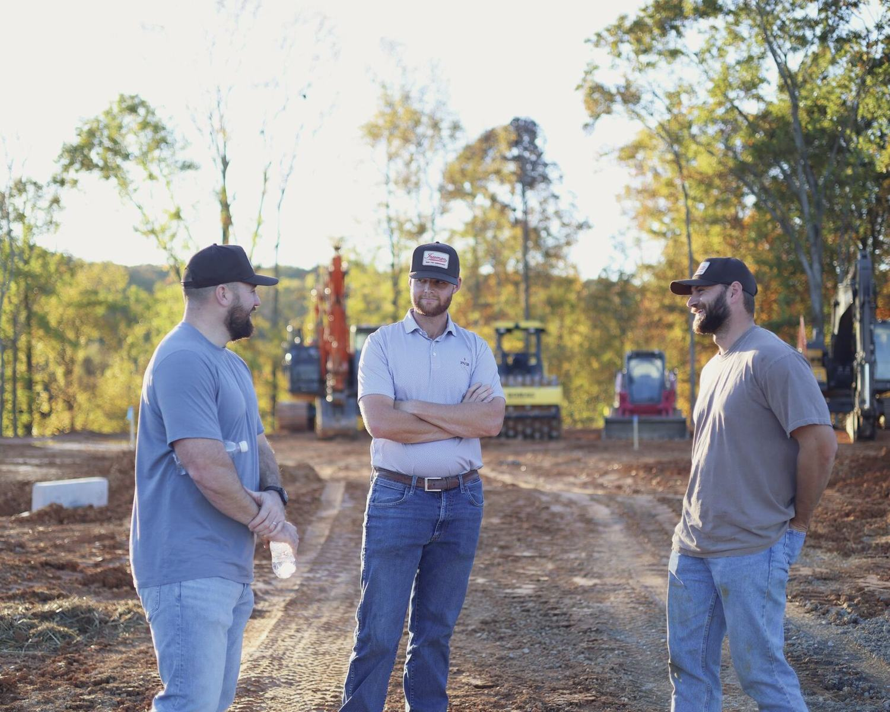
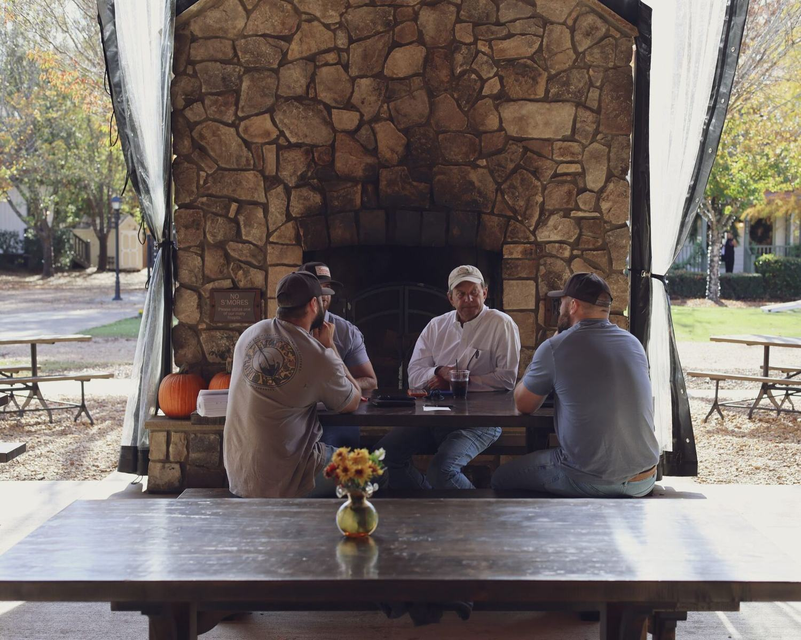
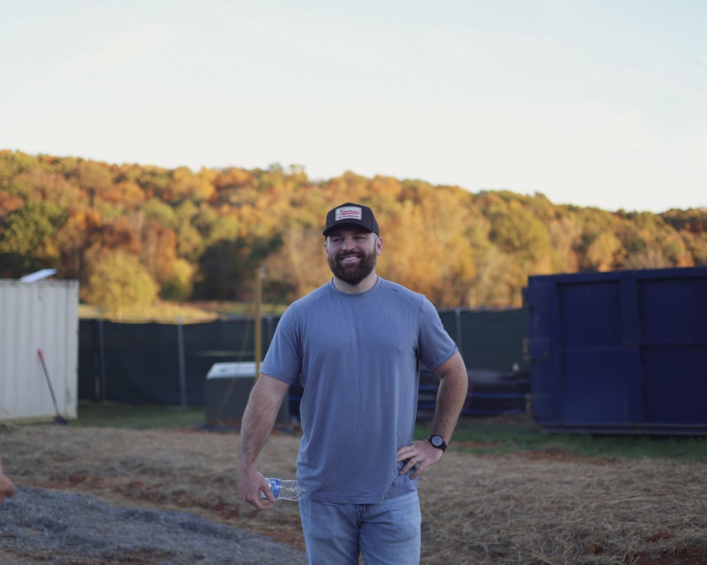
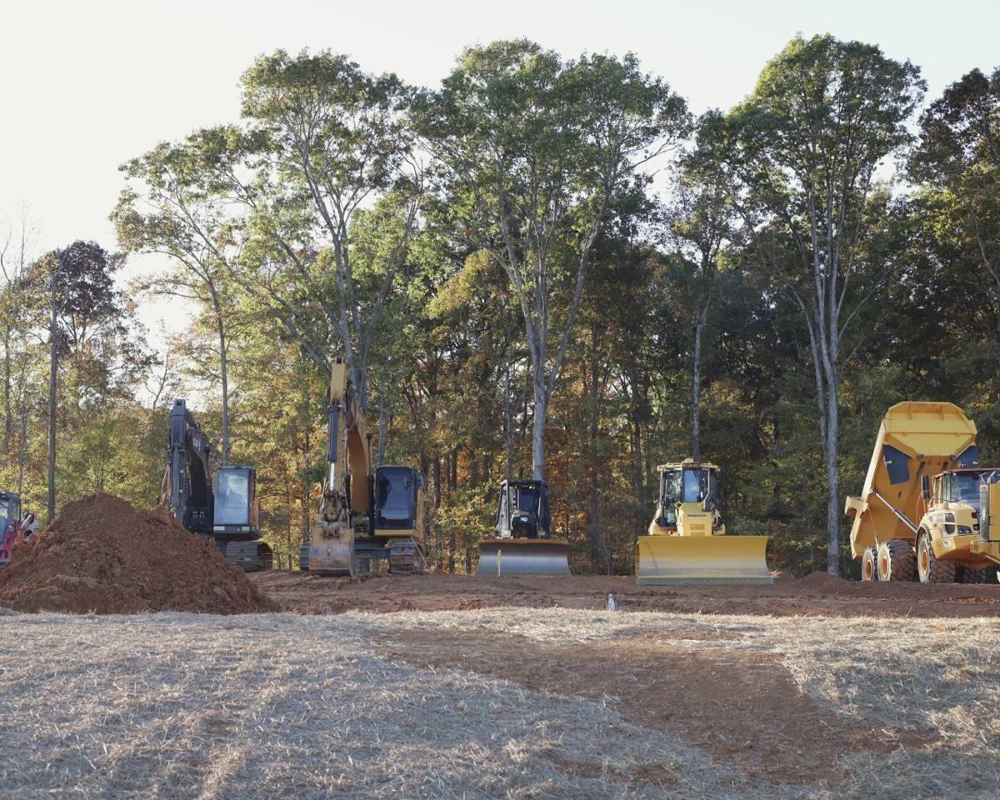
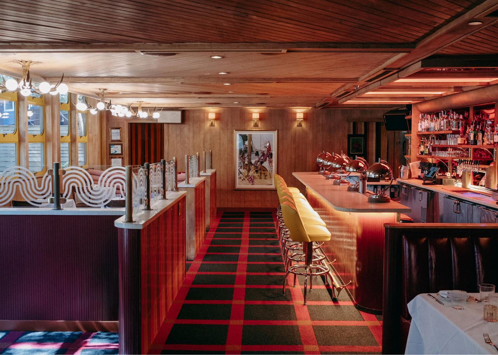
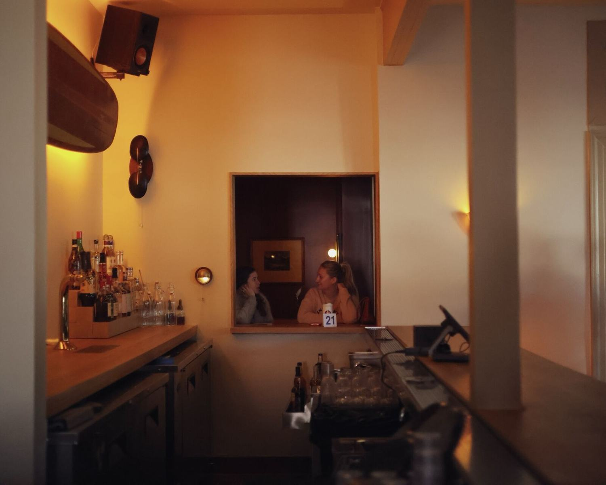
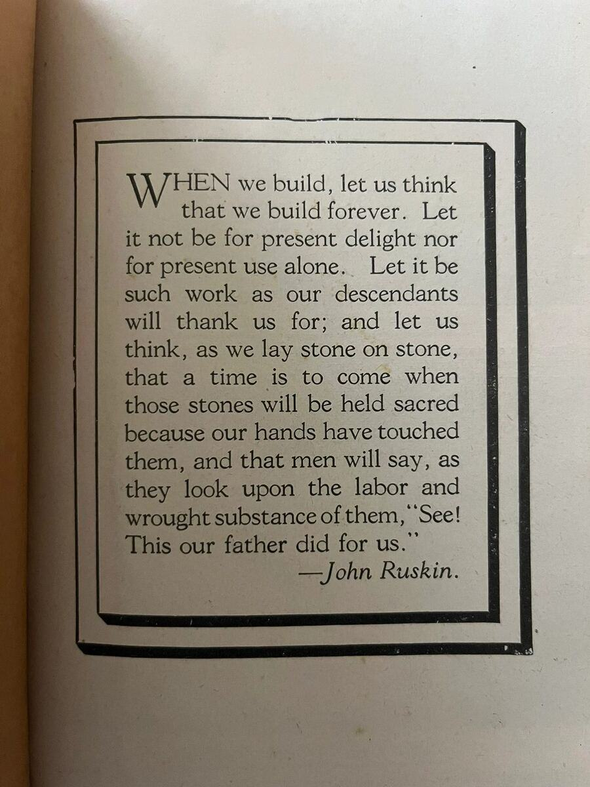
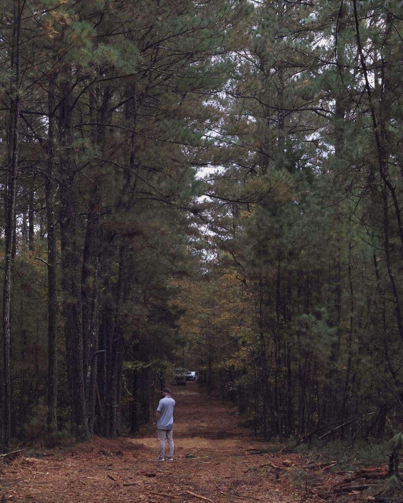
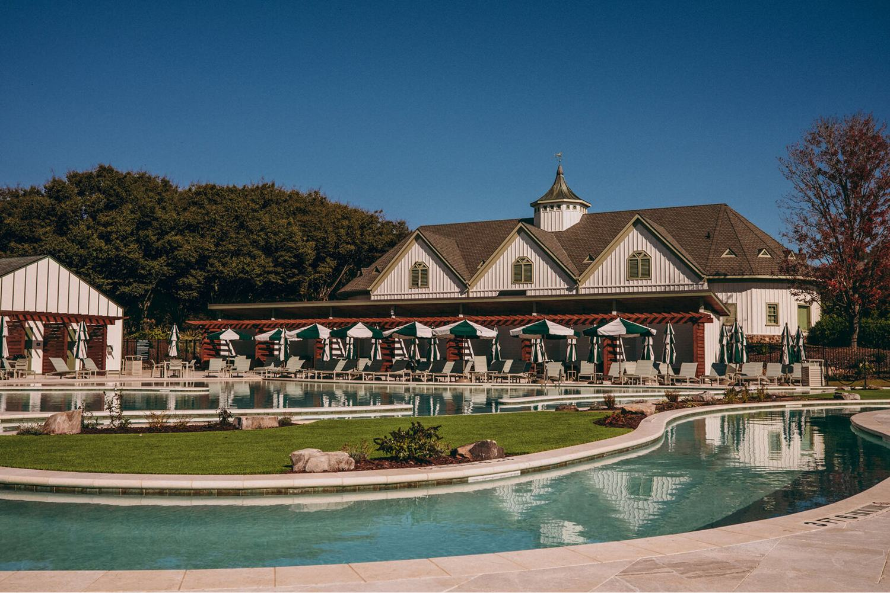

<title>Built for Generations</title>
<meta name="claude:viewport-fit-sides" content="cover">
<meta name="robots" content="noindex,nofollow">
<link rel="preconnect" href="https://fonts.googleapis.com">
<link rel="preconnect" href="https://fonts.gstatic.com" crossorigin>
<link rel="stylesheet" href="https://fonts.googleapis.com/css2?family=Libre+Franklin:ital,wght@0,300..700;1,300..700&display=swap">
<style>
/* Layout: a printed treatment. One left-hung column of chapters on Freeman paper, hairlines and small
   tracked caps from the approved site; photographs run as wide plates; the film itself lives on a dark
   "screening" ground. Red is punctuation only: the current chapter, one mark per drawing, the ask. */
:root{
  --paper:#fff9f1; --ink:#332e20; --muted:#6f6858; --hair:#d9d0c2; --sand:#efe6d6; --red:#f93822; --red-text:#d42c18;
  --screen:#1f1b12; --screen-ink:#fff9f1; --screen-muted:#b9ae9b; --screen-hair:#4d463a; --screen-fill:#2b2619;
  --gothic:"Libre Franklin","Franklin Gothic Book","Franklin Gothic Medium",Arial,sans-serif;
  --mono:Menlo,Monaco,"DejaVu Sans Mono",Consolas,monospace;
  --gut:max(20px,env(safe-area-inset-left,0px)); --gutr:max(20px,env(safe-area-inset-right,0px));
  --measure:34em; --wide:1180px;
}
@media (prefers-color-scheme:dark){:root:not([data-theme="light"]){
  --paper:#1f1b12; --ink:#fff9f1; --muted:#b9ae9b; --hair:#4d463a; --sand:#2b2619; --red:#f93822; --red-text:#ff6a55;
  --screen:#14110b; --screen-ink:#fff9f1; --screen-muted:#b9ae9b; --screen-hair:#4d463a; --screen-fill:#221d14; color-scheme:dark}}
:root[data-theme="dark"]{
  --paper:#1f1b12; --ink:#fff9f1; --muted:#b9ae9b; --hair:#4d463a; --sand:#2b2619; --red:#f93822; --red-text:#ff6a55;
  --screen:#14110b; --screen-ink:#fff9f1; --screen-muted:#b9ae9b; --screen-hair:#4d463a; --screen-fill:#221d14; color-scheme:dark}

*{box-sizing:border-box}
html{scroll-behavior:smooth;scroll-padding-top:64px}
@media (prefers-reduced-motion:reduce){html{scroll-behavior:auto}}
body{background:var(--paper);color:var(--ink);font-family:var(--gothic);font-size:16px;line-height:1.6;font-kerning:normal;font-synthesis:none;-webkit-font-smoothing:antialiased;overflow-x:hidden}
body::before{content:"";position:fixed;inset:0 0 auto;height:env(safe-area-inset-top,0px);z-index:10;background:var(--paper)}
a{color:inherit;text-decoration-color:var(--red);text-underline-offset:.2em;text-decoration-thickness:1px}
a:hover{color:var(--red-text)}
:focus-visible{outline:2px solid var(--red);outline-offset:3px}
p{margin:0}
h1,h2,h3,h4{margin:0;font-weight:400;text-wrap:balance}
button{font:inherit;color:inherit;background:none;border:0;padding:0;cursor:pointer}
img{display:block;width:100%;height:auto}
.wrap{max-width:var(--wide);margin:0 auto;padding-left:var(--gut);padding-right:var(--gutr)}

/* type roles */
.lab{font-size:11px;font-weight:500;letter-spacing:.09em;text-transform:uppercase;line-height:1.5;color:var(--muted)}
.lab b{font-weight:600;color:var(--ink)}
.lab .r,.r{color:var(--red-text)}
.mono{font-family:var(--mono);font-size:.82em;letter-spacing:0;font-variant-numeric:tabular-nums}
.statement{font-size:clamp(28px,4.6vw,54px);line-height:1.08;letter-spacing:-.022em;max-width:20em}
.statement i{font-style:normal;color:var(--red-text)}
.lede{font-size:clamp(19px,2.1vw,24px);line-height:1.42;letter-spacing:-.008em;max-width:30em;text-wrap:pretty}
.body{max-width:var(--measure);display:grid;gap:1em;font-size:16.5px;line-height:1.62;text-wrap:pretty}
.small{font-size:13.5px;line-height:1.55;color:var(--muted);max-width:44em;text-wrap:pretty}
.small b{color:var(--ink);font-weight:600}
h3.h{font-size:11px;font-weight:600;letter-spacing:.09em;text-transform:uppercase;color:var(--ink)}
h3.t{font-size:clamp(22px,2.6vw,30px);line-height:1.15;letter-spacing:-.015em}

/* top bar */
.bar{position:sticky;top:env(safe-area-inset-top,0px);z-index:9;background:var(--paper);border-bottom:1px solid var(--hair)}
.bar .wrap{display:flex;align-items:center;gap:24px;height:48px}
.bar .name{white-space:nowrap;flex:none}
.bar nav{margin-left:auto;display:flex;gap:2px;overflow-x:auto;scrollbar-width:none;min-width:0}
.bar nav::-webkit-scrollbar{display:none}
.bar nav a{flex:none;text-decoration:none;padding:14px 9px;font-size:11px;font-weight:500;letter-spacing:.09em;text-transform:uppercase;color:var(--muted);white-space:nowrap}
.bar nav a .n{font-family:var(--mono);font-size:10.5px;letter-spacing:0}
.bar nav a .w{display:none;margin-left:6px}
.bar nav a[aria-current="true"]{color:var(--red-text)}
.bar nav a[aria-current="true"] .w{display:inline}
@media (max-width:700px){.bar .name span{display:none}.bar nav a{padding:14px 7px}.bar nav a[aria-current="true"] .w{display:none}}

/* chapters */
.ch{padding-block:clamp(64px,9vw,128px) 0}
.ch-head{display:grid;grid-template-columns:auto 1fr auto;gap:14px;align-items:baseline;border-top:1px solid var(--ink);padding-top:12px;margin-bottom:clamp(32px,5vw,64px)}
.ch-head .no{font-family:var(--mono);font-size:12px;color:var(--red-text)}
.ch-head h2{font-size:11px;font-weight:600;letter-spacing:.09em;text-transform:uppercase}
.stack{display:grid;grid-template-columns:minmax(0,1fr);gap:clamp(28px,4vw,48px)}
.stack-l{display:grid;grid-template-columns:minmax(0,1fr);gap:clamp(48px,7vw,96px)}
.two{display:grid;grid-template-columns:minmax(0,5fr) minmax(0,7fr);gap:clamp(24px,5vw,72px);align-items:start}
.two.even{grid-template-columns:repeat(2,minmax(0,1fr))}
.three{display:grid;grid-template-columns:repeat(3,minmax(0,1fr));gap:clamp(20px,3vw,40px)}
.three.four{grid-template-columns:repeat(4,minmax(0,1fr))}
@media (max-width:820px){.two,.two.even,.three,.three.four{grid-template-columns:minmax(0,1fr)}}
.rule{border-top:1px solid var(--hair);padding-top:14px}
.col{display:grid;gap:12px;align-content:start;min-width:0}

/* plates (photographs) */
figure{margin:0}
.plate img{background:var(--sand)}
.plate figcaption,.cap{display:flex;flex-wrap:wrap;justify-content:space-between;gap:4px 18px;margin-top:9px;font-size:10.5px;font-weight:500;letter-spacing:.09em;text-transform:uppercase;color:var(--muted);line-height:1.5}
.plate.crop img{aspect-ratio:var(--ar,16/9);object-fit:cover;object-position:var(--pos,50% 50%)}
.bleed{max-width:1480px;margin:0 auto}
.pair{display:grid;grid-template-columns:minmax(0,7fr) minmax(0,5fr);gap:clamp(12px,2vw,24px);align-items:end}
.pair.rev{grid-template-columns:minmax(0,5fr) minmax(0,7fr)}
.trio{display:grid;grid-template-columns:repeat(3,minmax(0,1fr));gap:clamp(12px,2vw,24px);align-items:start}
@media (max-width:700px){.pair,.pair.rev{grid-template-columns:minmax(0,1fr)}.trio{grid-template-columns:repeat(2,minmax(0,1fr))}.trio>:first-child{grid-column:1/-1}}

/* hero */
.hero{padding-block:clamp(36px,6vw,72px) 0}
.hero .sig{width:clamp(150px,20vw,230px);color:var(--ink);display:block}
.hero h1{font-size:clamp(46px,10.4vw,148px);line-height:.93;letter-spacing:-.04em;margin-top:clamp(28px,5vw,56px)}
.hero h1 i{font-style:normal;color:var(--red)}
.hero .sub{margin-top:clamp(18px,2.4vw,28px);font-size:clamp(19px,2.3vw,27px);letter-spacing:-.01em}
.hero .meta{margin-top:clamp(28px,4vw,48px);display:grid;grid-template-columns:repeat(4,minmax(0,1fr));gap:16px 24px;border-top:1px solid var(--hair);padding-top:14px}
.hero .meta div{display:grid;gap:2px}
.hero .meta .v{font-size:14.5px}
@media (max-width:700px){.hero .meta{grid-template-columns:repeat(2,minmax(0,1fr))}}

/* five-figure row */
.figs{display:grid;grid-template-columns:repeat(5,minmax(0,1fr));border-top:1px solid var(--ink);border-bottom:1px solid var(--hair)}
.figs>div{padding:16px 16px 18px 0;display:grid;gap:6px;align-content:start;border-left:1px solid var(--hair);padding-left:16px}
.figs>div:first-child{border-left:0;padding-left:0}
.figs .n{font-size:clamp(30px,4.4vw,56px);line-height:1;letter-spacing:-.03em;font-variant-numeric:tabular-nums lining-nums}
.figs .d{font-size:13px;line-height:1.45;color:var(--muted)}
@media (max-width:820px){.figs{grid-template-columns:repeat(2,minmax(0,1fr))}.figs>div{border-top:1px solid var(--hair)}.figs>div:nth-child(odd){border-left:0;padding-left:0}.figs>div:nth-child(-n+2){border-top:0}.figs>div:last-child{grid-column:1/-1}}

/* definition rows / registers */
.rows{display:grid;border-top:1px solid var(--ink)}
.row{display:grid;grid-template-columns:minmax(0,3fr) minmax(0,9fr);gap:8px 32px;padding:16px 0;border-bottom:1px solid var(--hair);align-items:baseline}
.row>.k{font-size:11px;font-weight:600;letter-spacing:.09em;text-transform:uppercase}
.row>.v{font-size:15.5px;line-height:1.55;max-width:44em;text-wrap:pretty}
.row>.v .lab{display:block;margin-top:6px}
@media (max-width:700px){.row{grid-template-columns:minmax(0,1fr)}}

/* evidence tags */
.tag{display:inline-block;font-family:var(--mono);font-size:10px;letter-spacing:.02em;text-transform:uppercase;padding:1px 6px;border:1px solid currentColor;white-space:nowrap;vertical-align:.12em;margin-right:6px}
.tag.v{color:var(--ink)}
.tag.i{color:var(--muted);border-style:dashed}
.tag.u{color:var(--red-text)}
.tag.e{color:var(--muted);border-style:dashed}

/* lists */
ul.plain{list-style:none;margin:0;padding:0;display:grid;gap:9px}
ul.plain li{padding-left:18px;position:relative;font-size:15px;line-height:1.5;text-wrap:pretty}
ul.plain li::before{content:"";position:absolute;left:0;top:.72em;width:8px;height:1px;background:var(--ink)}
ul.plain.no li::before{background:var(--red)}

/* tables */
.scroll{overflow-x:auto;-webkit-overflow-scrolling:touch}
table{border-collapse:collapse;width:100%;font-size:14px;line-height:1.45}
th{font-size:10.5px;font-weight:600;letter-spacing:.09em;text-transform:uppercase;text-align:left;color:var(--muted);padding:8px 14px 8px 0;border-bottom:1px solid var(--ink);white-space:nowrap;vertical-align:bottom}
td{padding:11px 14px 11px 0;border-bottom:1px solid var(--hair);vertical-align:top}
td.num,th.num{text-align:right;font-family:var(--mono);font-size:13px;font-variant-numeric:tabular-nums;white-space:nowrap;padding-right:0}
td.n{font-family:var(--mono);font-size:12px;color:var(--muted);white-space:nowrap}
tr.total td{border-top:1px solid var(--ink);border-bottom:1px solid var(--ink);font-weight:600}
tr.sub td{color:var(--muted);font-size:13px}

/* Represent references */
.refs{display:grid;border-top:1px solid var(--ink)}
.ref{display:grid;grid-template-columns:34px minmax(0,4fr) minmax(0,7fr);gap:6px 24px;padding:16px 0;border-bottom:1px solid var(--hair);align-items:baseline}
.ref .n{font-family:var(--mono);font-size:12px;color:var(--muted)}
.ref .ti{font-size:16px;line-height:1.3;font-weight:500}
.ref .ti a{text-decoration-color:var(--hair)}
.ref .ti a:hover{text-decoration-color:var(--red)}
.ref .mt{display:block;margin-top:5px}
.ref .tx{font-size:14.5px;line-height:1.55;text-wrap:pretty}
.ref .tx em{display:block;font-style:normal;color:var(--muted);margin-top:6px;font-size:13.5px}
@media (max-width:820px){.ref{grid-template-columns:28px minmax(0,1fr)}.ref .tx{grid-column:2}}

/* films register */
.films{display:grid;border-top:1px solid var(--ink)}
.film{border-bottom:1px solid var(--hair)}
.film>summary{list-style:none;display:grid;grid-template-columns:54px minmax(0,4fr) minmax(0,7fr) 24px;gap:6px 24px;padding:20px 0;cursor:pointer;align-items:baseline}
.film>summary::-webkit-details-marker{display:none}
.film .no{font-family:var(--mono);font-size:12px;color:var(--red-text)}
.film .ti{font-size:clamp(22px,2.8vw,32px);line-height:1.1;letter-spacing:-.018em}
.film .q{font-size:15.5px;line-height:1.5;text-wrap:pretty}
.film .pm{font-family:var(--mono);font-size:15px;color:var(--muted);text-align:right}
.film[open] .pm::before{content:"−"}.film:not([open]) .pm::before{content:"+"}
.film .more{display:grid;grid-template-columns:repeat(3,minmax(0,1fr));gap:20px 32px;padding:4px 0 28px 78px}
.film .more p{font-size:14.5px;line-height:1.55;text-wrap:pretty}
.film .more .lab{margin-bottom:5px;display:block}
@media (max-width:820px){.film>summary{grid-template-columns:34px minmax(0,1fr) 20px}.film .q{grid-column:2}.film .pm{grid-row:1;grid-column:3}.film .more{grid-template-columns:minmax(0,1fr);padding-left:58px}}
@media (max-width:480px){.film .more{padding-left:0}}

/* three openings */
.opens{display:grid;grid-template-columns:repeat(3,minmax(0,1fr));border-top:1px solid var(--ink)}
.open{padding:18px 24px 22px 0;display:grid;gap:12px;align-content:start;border-left:1px solid var(--hair);padding-left:24px}
.open:first-child{border-left:0;padding-left:0}
.open h4{font-size:24px;letter-spacing:-.015em;line-height:1.1}
.open p{font-size:14.5px;line-height:1.55;text-wrap:pretty}
.open.rec{border-top:3px solid var(--red);margin-top:-2px}
@media (max-width:820px){.opens{grid-template-columns:minmax(0,1fr)}.open{border-left:0;padding-left:0;border-bottom:1px solid var(--hair)}}

/* the screening ground: opening film */
.screen{background:var(--screen);color:var(--screen-ink);margin-top:clamp(64px,9vw,128px);padding-block:clamp(48px,7vw,96px)}
.screen .lab{color:var(--screen-muted)}.screen .lab b{color:var(--screen-ink)}
.screen .small{color:var(--screen-muted)}.screen .small b{color:var(--screen-ink)}
.screen .rule{border-color:var(--screen-hair)}
.screen h3.h{color:var(--screen-ink)}
.screen td{border-color:var(--screen-hair)}.screen th{border-color:var(--screen-ink);color:var(--screen-muted)}
.screen td.n{color:var(--screen-muted)}
.screen ul.plain li::before{background:var(--screen-ink)}
.screen ul.plain.no li::before{background:var(--red)}
.screen .r{color:#ff6a55}
.filmtitle{font-size:clamp(44px,9vw,120px);line-height:.95;letter-spacing:-.04em}
.acts{display:grid;grid-template-columns:repeat(3,minmax(0,1fr));gap:clamp(20px,3vw,40px)}
.acts p{font-size:15px;line-height:1.6;text-wrap:pretty}
@media (max-width:820px){.acts{grid-template-columns:minmax(0,1fr)}}

/* storyboard */
.board{display:grid;grid-template-columns:minmax(0,8fr) minmax(0,4fr);gap:clamp(20px,3vw,40px);align-items:start}
.board .frame{background:var(--paper-fixed,#fff9f1);color:#332e20;aspect-ratio:16/9;width:100%;display:block}
.board .frame svg{width:100%;height:100%;display:block}
.board .info{display:grid;gap:14px;align-content:start;min-width:0}
.board .info h4{font-size:clamp(24px,2.8vw,34px);line-height:1.08;letter-spacing:-.02em}
.board .info .act{font-size:15.5px;line-height:1.55;text-wrap:pretty}
.board dl{margin:0;display:grid;gap:0;border-top:1px solid var(--screen-hair)}
.board dl div{display:grid;grid-template-columns:76px minmax(0,1fr);gap:10px;padding:8px 0;border-bottom:1px solid var(--screen-hair);font-size:13.5px;line-height:1.45}
.board dt{font-size:10.5px;font-weight:600;letter-spacing:.09em;text-transform:uppercase;color:var(--screen-muted);padding-top:2px}
.board dd{margin:0}
.board .ctl{display:flex;align-items:center;gap:8px;margin-top:10px}
.board .ctl button{min-width:44px;height:44px;border:1px solid var(--screen-hair);font-size:11px;font-weight:500;letter-spacing:.09em;text-transform:uppercase;padding:0 14px}
.board .ctl button:hover{border-color:var(--screen-ink)}
.board .ctl .count{margin-left:auto;font-family:var(--mono);font-size:12px;color:var(--screen-muted)}
.strip{display:grid;grid-template-columns:repeat(12,minmax(0,1fr));gap:6px;margin-top:14px}
.strip button{background:#fff9f1;color:#332e20;aspect-ratio:16/9;opacity:.42;position:relative;display:block}
.strip button svg{width:100%;height:100%;display:block}
.strip button[aria-pressed="true"]{opacity:1;outline:2px solid var(--red);outline-offset:2px}
.strip button:hover{opacity:.85}
@media (max-width:820px){.board{grid-template-columns:minmax(0,1fr)}.strip{grid-template-columns:repeat(6,minmax(0,1fr))}}
.sb-l{vector-effect:non-scaling-stroke;fill:none;stroke:#332e20;stroke-width:1.1;stroke-linecap:round;stroke-linejoin:round}
.sb-t{vector-effect:non-scaling-stroke;fill:none;stroke:#332e20;stroke-width:.6;stroke-linecap:round;opacity:.55}
.sb-f{vector-effect:non-scaling-stroke;fill:#332e20;stroke:none}
.sb-g{vector-effect:non-scaling-stroke;fill:#332e20;opacity:.1;stroke:none}
.sb-g2{vector-effect:non-scaling-stroke;fill:#332e20;opacity:.22;stroke:none}
.sb-p{vector-effect:non-scaling-stroke;fill:#fff9f1;stroke:#332e20;stroke-width:1.1;stroke-linejoin:round}
.sb-rd{vector-effect:non-scaling-stroke;fill:#f93822;stroke:none}
.sb-rl{vector-effect:non-scaling-stroke;fill:none;stroke:#f93822;stroke-width:1.2;stroke-linecap:round}
svg.sb text{font-family:Menlo,Monaco,monospace;font-size:7px;fill:#332e20}

/* approach: month diagram */
.month{border-top:1px solid var(--ink);padding-top:16px}
.month svg{width:100%;height:auto;display:block;min-width:640px}
.month svg text{font-family:var(--gothic);font-size:11px;fill:var(--muted);letter-spacing:.06em}
.month svg .ink{stroke:var(--ink);fill:none}.month svg .hair{stroke:var(--hair);fill:none}
.month svg .fi{fill:var(--ink)}.month svg .fr{fill:var(--red)}.month svg .ti{fill:var(--ink);font-weight:600}

/* schedule */
.sched td,.sched th{padding-right:10px}
.sched td{font-size:13px}
.sched .on{background:var(--ink);height:8px;display:block}
.sched .crew{background:var(--red);height:8px;width:22%;display:block}
.sched .half{background:var(--ink);height:8px;width:50%;display:block}
.sched .half.r{margin-left:50%}
.sched .dot{width:8px;height:8px;background:var(--red);display:block;border-radius:50%;margin-left:70%}
.sched td.cell{padding:14px 4px 14px 0;vertical-align:middle;min-width:92px}

/* budget */
.scope{display:flex;flex-wrap:wrap;gap:0;border:1px solid var(--ink);width:fit-content;max-width:100%}
.scope button{padding:12px 18px;min-height:44px;font-size:11px;font-weight:600;letter-spacing:.09em;text-transform:uppercase;border-left:1px solid var(--ink)}
.scope button:first-child{border-left:0}
.scope button[aria-pressed="true"]{background:var(--ink);color:var(--paper)}
.allin{display:grid;grid-template-columns:minmax(0,1fr) minmax(0,1fr);gap:24px;border-top:1px solid var(--ink);border-bottom:1px solid var(--ink);padding:18px 0}
.allin .n{font-size:clamp(30px,4.6vw,56px);line-height:1;letter-spacing:-.03em;font-variant-numeric:tabular-nums lining-nums}
.allin .d{font-size:13px;color:var(--muted);margin-top:8px;line-height:1.45}
@media (max-width:600px){.allin{grid-template-columns:minmax(0,1fr)}}

/* evaluation */
.evals{display:grid;border-top:1px solid var(--ink)}
.eval{display:grid;grid-template-columns:34px minmax(0,4fr) minmax(0,4fr) minmax(0,4fr);gap:8px 28px;padding:20px 0;border-bottom:1px solid var(--hair);align-items:start}
.eval .n{font-family:var(--mono);font-size:12px;color:var(--red-text);padding-top:5px}
.eval h4{font-size:21px;line-height:1.15;letter-spacing:-.012em}
.eval .qq{font-size:14.5px;line-height:1.5;margin-top:8px;color:var(--muted);text-wrap:pretty}
@media (max-width:820px){.eval{grid-template-columns:28px minmax(0,1fr)}.eval>div:nth-child(n+3){grid-column:2}}

/* decision */
.ask{border:1px solid var(--ink);padding:clamp(20px,3.4vw,40px);display:grid;gap:22px}
.ask ol{margin:0;padding:0;list-style:none;display:grid;gap:0;counter-reset:a}
.ask ol li{counter-increment:a;display:grid;grid-template-columns:34px minmax(0,1fr);gap:10px;padding:14px 0;border-top:1px solid var(--hair);font-size:clamp(17px,1.9vw,21px);line-height:1.35;text-wrap:pretty}
.ask ol li::before{content:"0" counter(a);font-family:var(--mono);font-size:12px;color:var(--red-text);padding-top:.4em}
.call{display:grid;gap:14px}
.call .opts{display:grid;grid-template-columns:repeat(3,minmax(0,1fr));gap:10px}
.call .opts button{border:1px solid var(--ink);padding:14px 16px;min-height:64px;text-align:left;display:grid;gap:3px;align-content:start}
.call .opts button b{font-size:11px;font-weight:600;letter-spacing:.09em;text-transform:uppercase}
.call .opts button span{font-size:13px;color:var(--muted);line-height:1.4}
.call .opts button[aria-pressed="true"]{background:var(--ink);color:var(--paper)}
.call .opts button[aria-pressed="true"] span{color:var(--paper);opacity:.75}
.call .opts button:first-child[aria-pressed="true"]{background:var(--red);border-color:var(--red);color:#fff9f1}
.call textarea{width:100%;min-height:92px;font:inherit;font-size:15px;line-height:1.5;color:var(--ink);background:transparent;border:1px solid var(--hair);padding:12px;border-radius:0;resize:vertical}
.call textarea:focus{border-color:var(--ink);outline:none}
.call .save{justify-self:start;border:1px solid var(--ink);padding:0 20px;height:44px;font-size:11px;font-weight:600;letter-spacing:.09em;text-transform:uppercase}
.call .save:hover{background:var(--ink);color:var(--paper)}
.call .status{font-size:13px;color:var(--muted);min-height:1.5em}
@media (max-width:700px){.call .opts{grid-template-columns:minmax(0,1fr)}}

/* appendix */
.apx details{border-bottom:1px solid var(--hair)}
.apx details:first-of-type{border-top:1px solid var(--ink)}
.apx summary{list-style:none;cursor:pointer;display:flex;justify-content:space-between;gap:16px;padding:16px 0;font-size:11px;font-weight:600;letter-spacing:.09em;text-transform:uppercase}
.apx summary::-webkit-details-marker{display:none}
.apx summary::after{content:"+";font-family:var(--mono);font-size:14px;color:var(--muted)}
.apx details[open] summary::after{content:"−"}
.apx .in{padding:4px 0 28px;display:grid;gap:18px}
.apx .in p,.apx .in li{font-size:14.5px;line-height:1.6;max-width:52em;text-wrap:pretty}
.apx .in h4{font-size:11px;font-weight:600;letter-spacing:.09em;text-transform:uppercase;margin-top:8px}
.apx ol,.apx ul{margin:0;padding-left:1.2em;display:grid;gap:8px}
.apx a{word-break:break-word}

footer{margin-top:clamp(64px,9vw,128px);border-top:1px solid var(--ink);padding-block:18px 48px}
footer .wrap{display:flex;flex-wrap:wrap;justify-content:space-between;gap:12px 32px;align-items:end}
footer .eagle{width:120px;color:var(--red)}
</style>
<header class="bar">
  <div class="wrap">
    <div class="lab name"><b>Freeman</b><span> &nbsp;/&nbsp; Built for Generations</span></div>
    <nav aria-label="Chapters" id="chapnav">
      <a href="#idea"><span class="n">01</span><span class="w">An idea</span></a>
      <a href="#precedent"><span class="n">02</span><span class="w">A precedent</span></a>
      <a href="#world"><span class="n">03</span><span class="w">Our world</span></a>
      <a href="#films"><span class="n">04</span><span class="w">The films</span></a>
      <a href="#approach"><span class="n">05</span><span class="w">The approach</span></a>
      <a href="#months"><span class="n">06</span><span class="w">Five months</span></a>
      <a href="#opportunity"><span class="n">07</span><span class="w">The opportunity</span></a>
      <a href="#decision"><span class="n">08</span><span class="w">The decision</span></a>
    </nav>
  </div>
</header>

<main>
<!-- ============================== 01 AN IDEA ============================== -->
<section class="hero wrap" id="idea">
  <svg class="sig" viewBox="0 0 160 61" role="img" aria-label="Freeman"><path fill="currentColor" d="M56 4h7v1h-7zM52 5h11v1h-11zM31 6h13v1h-13zM49 6h13v1h-13zM29 7h31v1h-31zM28 8h5v1h-5zM43 8h12v1h-12zM27 9h4v1h-4zM44 9h5v1h-5zM26 10h3v1h-3zM43 10h5v1h-5zM25 11h4v1h-4zM42 11h4v1h-4zM25 12h3v1h-3zM41 12h4v1h-4zM25 13h3v1h-3zM41 13h3v1h-3zM25 14h4v1h-4zM40 14h4v1h-4zM25 15h5v1h-5zM33 15h3v1h-3zM39 15h4v1h-4zM26 16h10v1h-10zM38 16h4v1h-4zM27 17h7v1h-7zM37 17h4v1h-4zM37 18h4v1h-4zM36 19h4v1h-4zM35 20h4v1h-4zM34 21h4v1h-4zM34 22h4v1h-4zM33 23h4v1h-4zM40 23h3v1h-3zM45 23h3v1h-3zM30 24h13v1h-13zM44 24h4v1h-4zM63 24h3v1h-3zM76 24h3v1h-3zM87 24h3v1h-3zM95 24h3v1h-3zM104 24h3v1h-3zM119 24h4v1h-4zM125 24h2v1h-2zM134 24h3v1h-3zM142 24h3v1h-3zM29 25h13v1h-13zM44 25h5v1h-5zM61 25h6v1h-6zM74 25h6v1h-6zM86 25h5v1h-5zM93 25h6v1h-6zM102 25h6v1h-6zM117 25h10v1h-10zM133 25h5v1h-5zM140 25h6v1h-6zM30 26h6v1h-6zM37 26h4v1h-4zM44 26h7v1h-7zM59 26h8v1h-8zM72 26h9v1h-9zM84 26h24v1h-24zM116 26h4v1h-4zM121 26h6v1h-6zM131 26h16v1h-16zM30 27h4v1h-4zM38 27h2v1h-2zM43 27h3v1h-3zM48 27h4v1h-4zM58 27h4v1h-4zM64 27h3v1h-3zM71 27h4v1h-4zM77 27h3v1h-3zM83 27h4v1h-4zM88 27h6v1h-6zM97 27h6v1h-6zM105 27h3v1h-3zM114 27h4v1h-4zM121 27h5v1h-5zM130 27h3v1h-3zM135 27h6v1h-6zM144 27h3v1h-3zM29 28h4v1h-4zM43 28h2v1h-2zM48 28h4v1h-4zM57 28h4v1h-4zM63 28h4v1h-4zM70 28h4v1h-4zM77 28h3v1h-3zM82 28h3v1h-3zM87 28h6v1h-6zM96 28h6v1h-6zM105 28h3v1h-3zM113 28h4v1h-4zM121 28h5v1h-5zM129 28h3v1h-3zM134 28h6v1h-6zM143 28h4v1h-4zM29 29h4v1h-4zM42 29h3v1h-3zM47 29h4v1h-4zM56 29h4v1h-4zM62 29h4v1h-4zM69 29h4v1h-4zM75 29h4v1h-4zM81 29h3v1h-3zM87 29h4v1h-4zM96 29h4v1h-4zM104 29h4v1h-4zM112 29h4v1h-4zM121 29h4v1h-4zM128 29h3v1h-3zM134 29h5v1h-5zM143 29h3v1h-3zM28 30h4v1h-4zM41 30h3v1h-3zM47 30h4v1h-4zM55 30h4v1h-4zM61 30h4v1h-4zM68 30h4v1h-4zM74 30h4v1h-4zM80 30h3v1h-3zM86 30h5v1h-5zM95 30h4v1h-4zM103 30h4v1h-4zM112 30h3v1h-3zM120 30h4v1h-4zM127 30h3v1h-3zM133 30h4v1h-4zM142 30h4v1h-4zM151 30h4v1h-4zM27 31h4v1h-4zM40 31h3v1h-3zM46 31h4v1h-4zM54 31h10v1h-10zM68 31h9v1h-9zM80 31h3v1h-3zM85 31h5v1h-5zM94 31h4v1h-4zM103 31h4v1h-4zM111 31h4v1h-4zM119 31h4v1h-4zM127 31h3v1h-3zM132 31h5v1h-5zM141 31h4v1h-4zM150 31h6v1h-6zM26 32h4v1h-4zM40 32h2v1h-2zM45 32h4v1h-4zM54 32h8v1h-8zM67 32h8v1h-8zM79 32h3v1h-3zM85 32h4v1h-4zM94 32h4v1h-4zM102 32h4v1h-4zM110 32h4v1h-4zM119 32h4v1h-4zM126 32h3v1h-3zM132 32h4v1h-4zM141 32h3v1h-3zM150 32h2v1h-2zM154 32h2v1h-2zM25 33h4v1h-4zM39 33h3v1h-3zM45 33h4v1h-4zM53 33h6v1h-6zM66 33h7v1h-7zM78 33h3v1h-3zM84 33h4v1h-4zM93 33h4v1h-4zM101 33h4v1h-4zM109 33h4v1h-4zM118 33h4v1h-4zM125 33h3v1h-3zM131 33h4v1h-4zM140 33h4v1h-4zM149 33h3v1h-3zM154 33h2v1h-2zM5 34h3v1h-3zM24 34h4v1h-4zM38 34h3v1h-3zM44 34h4v1h-4zM52 34h4v1h-4zM65 34h4v1h-4zM77 34h3v1h-3zM83 34h4v1h-4zM92 34h4v1h-4zM101 34h3v1h-3zM109 34h4v1h-4zM117 34h4v1h-4zM124 34h3v1h-3zM130 34h4v1h-4zM139 34h4v1h-4zM148 34h3v1h-3zM154 34h2v1h-2zM4 35h4v1h-4zM23 35h4v1h-4zM37 35h3v1h-3zM43 35h4v1h-4zM52 35h4v1h-4zM64 35h5v1h-5zM76 35h3v1h-3zM83 35h3v1h-3zM92 35h3v1h-3zM100 35h4v1h-4zM108 35h4v1h-4zM116 35h5v1h-5zM123 35h3v1h-3zM129 35h4v1h-4zM139 35h3v1h-3zM147 35h3v1h-3zM154 35h2v1h-2zM4 36h4v1h-4zM22 36h4v1h-4zM37 36h2v1h-2zM43 36h4v1h-4zM51 36h4v1h-4zM63 36h5v1h-5zM75 36h3v1h-3zM82 36h4v1h-4zM91 36h4v1h-4zM100 36h3v1h-3zM107 36h5v1h-5zM116 36h4v1h-4zM122 36h3v1h-3zM129 36h4v1h-4zM138 36h4v1h-4zM146 36h3v1h-3zM154 36h2v1h-2zM4 37h4v1h-4zM20 37h5v1h-5zM36 37h3v1h-3zM43 37h3v1h-3zM49 37h6v1h-6zM62 37h6v1h-6zM74 37h3v1h-3zM81 37h4v1h-4zM90 37h4v1h-4zM99 37h4v1h-4zM106 37h5v1h-5zM115 37h4v1h-4zM121 37h3v1h-3zM128 37h4v1h-4zM138 37h3v1h-3zM145 37h3v1h-3zM153 37h2v1h-2zM4 38h3v1h-3zM18 38h5v1h-5zM35 38h3v1h-3zM42 38h4v1h-4zM48 38h7v1h-7zM60 38h8v1h-8zM72 38h4v1h-4zM80 38h4v1h-4zM90 38h3v1h-3zM99 38h3v1h-3zM105 38h6v1h-6zM114 38h5v1h-5zM120 38h3v1h-3zM127 38h4v1h-4zM138 38h3v1h-3zM143 38h4v1h-4zM153 38h2v1h-2zM5 39h4v1h-4zM16 39h6v1h-6zM34 39h3v1h-3zM42 39h9v1h-9zM52 39h3v1h-3zM57 39h6v1h-6zM65 39h4v1h-4zM70 39h5v1h-5zM80 39h3v1h-3zM89 39h4v1h-4zM99 39h12v1h-12zM112 39h10v1h-10zM127 39h4v1h-4zM137 39h9v1h-9zM152 39h3v1h-3zM6 40h14v1h-14zM33 40h3v1h-3zM43 40h6v1h-6zM52 40h9v1h-9zM66 40h7v1h-7zM79 40h4v1h-4zM89 40h3v1h-3zM99 40h7v1h-7zM108 40h13v1h-13zM126 40h4v1h-4zM138 40h6v1h-6zM151 40h3v1h-3zM7 41h10v1h-10zM33 41h2v1h-2zM43 41h4v1h-4zM54 41h5v1h-5zM67 41h4v1h-4zM80 41h2v1h-2zM89 41h2v1h-2zM100 41h4v1h-4zM109 41h4v1h-4zM116 41h3v1h-3zM127 41h2v1h-2zM139 41h3v1h-3zM150 41h4v1h-4zM147 42h6v1h-6zM144 43h8v1h-8zM140 44h11v1h-11zM134 45h17v1h-17zM41 46h108v1h-108zM32 47h116v1h-116zM26 48h120v1h-120zM22 49h122v1h-122zM19 50h122v1h-122zM16 51h8v1h-8zM33 51h102v1h-102zM13 52h6v1h-6zM38 52h76v1h-76zM10 53h6v1h-6zM42 53h43v1h-43zM7 54h6v1h-6zM52 54h3v1h-3zM5 55h5v1h-5zM5 56h3v1h-3z"/></svg>
  <h1>Built for<br>Generations<i>.</i></h1>
  <p class="sub">A five-month documentary experiment.</p>
  <div class="meta">
    <div><span class="lab">Proposal for</span><span class="v">Gabe Freeman, President</span></div>
    <div><span class="lab">Creative Director</span><span class="v">Cole Calfee</span></div>
    <div><span class="lab">Proposed production partner</span><span class="v">Cusick Media</span></div>
    <div><span class="lab">Treatment</span><span class="v">14 November 2026</span></div>
  </div>
</section>

<figure class="plate crop bleed" style="--ar:21/9;--pos:50% 38%;margin-top:clamp(28px,4vw,56px)">
  
  <figcaption class="wrap"><span>Freeman photograph. Reference for tone, not footage.</span><span>Photographer to be credited</span></figcaption>
</figure>

<section class="wrap" style="padding-top:clamp(48px,7vw,96px)">
  <div class="stack-l">
    <div class="two">
      <div class="col">
        <span class="lab"><span class="r">01</span> &nbsp;An idea</span>
        <p class="lede">Gabe, the finished rooms are only the last frame of the story. I want five months to film everything that comes before them.</p>
      </div>
      <div class="body">
        <p>There are people, decisions, setbacks and pieces of craftsmanship inside this company that almost nobody outside it ever sees. The company page already says so: <i>good construction is often invisible in the finished result.</i></p>
        <p>Built for Generations is a documentary series about that invisible part. It follows a company being built by people who build remarkable places, and it is made to be watched by someone who has never set foot on a jobsite.</p>
        <p>You marked the first version of this idea <i>refine</i>. This is the refinement. It is smaller, it has a named production partner, it has a budget you can read in a minute, and it ends on a date. There is no ten-episode season and no commitment past month five.</p>
        <p>We make the films. Then you and I look at what we made and decide whether it deserves to continue.</p>
      </div>
    </div>

    <div>
      <div class="figs">
        <div><span class="n">5</span><span class="d">months, alongside the remainder of my current agreement. Exact dates to be confirmed.</span></div>
        <div><span class="n">5</span><span class="d">professional crew days. One a month with Cusick Media.</span></div>
        <div><span class="n">5</span><span class="d">films is the ambition, about one a month, if editing resources support it.</span></div>
        <div><span class="n">$12,500</span><span class="d">crew-day target: $2,500 × 5. A planning figure, not a Cusick quote, and not the whole cost.</span></div>
        <div><span class="n">1</span><span class="d">decision at the end: continue, adjust, or stop and keep the films.</span></div>
      </div>
      <p class="small" style="margin-top:14px">This is a standalone Freeman media project. It does not depend on the case study system, the website or anything in the Three Ideas treatment. The Represent clothing collaboration and the globe insignia stay on hold and are not part of it.</p>
    </div>
  </div>
</section>

<!-- ============================== 02 A PRECEDENT ============================== -->
<section class="ch wrap" id="precedent">
  <div class="ch-head"><span class="no">02</span><h2>A precedent</h2><span class="lab">Represent, Manchester</span></div>
  <div class="stack-l">
    <div class="two">
      <p class="statement">Represent made the building of the company part of what the company sells<i>.</i></p>
      <div class="body">
        <p>George and Michael Heaton started Represent in Horwich, near Manchester, around 2011. In June 2022 they began publishing <i>Behind the Brand</i>, a numbered documentary series about running the business: supplier trips, product meetings, store openings, bad weeks. Each episode sits on their own website as well as on YouTube.</p>
        <p>I am interested in the decision, not the look. They treated the ordinary work of building a company as worth watching, and they kept doing it. We are not a clothing brand and none of their style belongs here. The question for us is whether the same decision holds up in hospitality construction.</p>
        <p class="small"><b>How to read this chapter.</b> The research environment could not open YouTube, Represent's site or the press pages directly, so no video was watched and no page was read in full. Everything below comes from search extracts of the linked sources and is marked accordingly. Before this goes further than the two of us, I will watch the eight films listed here and check each quoted figure against its page.</p>
        <p class="small"><span class="tag v">Reported</span>stated by the linked source, as extracted by search &nbsp; <span class="tag i">Inferred</span>my reading of the evidence &nbsp; <span class="tag u">Unknown</span>not found</p>
      </div>
    </div>

    <div>
      <h3 class="h" style="margin-bottom:14px">What the record shows</h3>
      <div class="rows">
        <div class="row"><div class="k">A series, not a film</div><div class="v"><span class="tag v">Reported</span>At least 67 numbered episodes across four seasons since June 2022: 15 in season one, at least 24 in season two, 22 in season three, and season four under way in 2025. A retailer interview calls it weekly; the counts suggest closer to fortnightly. <span class="lab"><a href="https://representclo.com/blogs/behind-the-brand" target="_blank" rel="noopener">representclo.com/blogs/behind-the-brand</a> · <a href="https://www.flannels.com/stylenews/fashion/george-heaton-represent-interview" target="_blank" rel="noopener">Flannels interview</a></span></div></div>
        <div class="row"><div class="k">Work already happening</div><div class="v"><span class="tag v">Reported</span>Episode subjects are the company's real calendar: a week with suppliers, a headquarters refit, a Black Friday warehouse, three store openings. <span class="tag i">Inferred</span>Almost nothing is invented for the camera, which is why the cadence is sustainable.</div></div>
        <div class="row"><div class="k">Two production speeds</div><div class="v"><span class="tag v">Reported</span>Alongside the numbered episodes, entries titled “DIY vlog” appear from about 2024. <span class="tag i">Inferred</span>A lighter, self-shot format keeps the series alive between larger productions. Our version of this is the camera I carry between crew days.</div></div>
        <div class="row"><div class="k">Why they say they do it</div><div class="v"><span class="tag v">Reported</span>In an interview with Culted, George Heaton describes wanting someone ten years behind him to see how hard building a brand is, and wanting the whole journey shown. Paraphrased from a search extract; to be checked against the page before it is ever quoted. <span class="lab"><a href="https://culted.com/meet-the-creative-mind-behind-represent-george-heaton/" target="_blank" rel="noopener">Culted</a></span></div></div>
        <div class="row"><div class="k">Depth over reach</div><div class="v"><span class="tag v">Reported</span>About 53,000 YouTube subscribers in October 2026 per a third-party tracker, against turnover reported at £93.8 million for 2024. <span class="tag i">Inferred</span>The series is small as a channel and large as a relationship. It is watched by the people who already care, which is the audience a builder needs too. <span class="lab"><a href="https://socialpruf.com/youtube/representclo" target="_blank" rel="noopener">socialpruf tracker</a> · <a href="https://www.cityam.com/?p=2338424" target="_blank" rel="noopener">City AM</a></span></div></div>
        <div class="row"><div class="k">What nobody can show</div><div class="v"><span class="tag u">Unknown</span>No source attributes revenue to the series. It began after the company's growth had already taken off, so it documented the scale-up and did not cause it. Who shoots and edits it, how many people, and what it costs are not public. I have not guessed.</div></div>
      </div>
    </div>

    <div>
      <div style="display:flex;justify-content:space-between;align-items:baseline;gap:16px;flex-wrap:wrap;margin-bottom:14px">
        <h3 class="h">Eight films to watch</h3>
        <span class="lab">Titles and descriptions as published by Represent. Runtimes, dates and views not retrieved.</span>
      </div>
      <div class="refs">
        <div class="ref"><span class="n">01</span><div><span class="ti"><a href="https://www.youtube.com/watch?v=1Fb1RKNvXQs" target="_blank" rel="noopener">Season 1, Ep 1: Manchester Pop Up</a></span><span class="lab mt">Covers June 2022</span></div><p class="tx">The series opens on an event already on the calendar, and it is numbered from the first day.<em>For us: begin with something real that is happening anyway. The commitment to return matters more than a perfect pilot.</em></p></div>
        <div class="ref"><span class="n">02</span><div><span class="ti"><a href="https://row.representclo.com/blogs/behind-the-brand/season-1-ep-9-a-week-with-our-suppliers-for-fw23" target="_blank" rel="noopener">Season 1, Ep 9: A Week With Our Suppliers</a></span><span class="lab mt">Factory visits</span></div><p class="tx">The team walks its factories and goes through pieces in development. A claim about quality becomes something you can see.<em>For us: the millwork shop, the steel fabricator, the trades we rely on and how we choose them.</em></p></div>
        <div class="ref"><span class="n">03</span><div><span class="ti"><a href="https://row.representclo.com/blogs/behind-the-brand/season-1-ep-12-represent-community-day" target="_blank" rel="noopener">Season 1, Ep 12: Community Day</a></span><span class="lab mt">Customers at headquarters</span></div><p class="tx">Customers are invited in and asked what should improve. The company is filmed listening.<em>For us: owners, operators and designers belong in the films as people, not as testimonials.</em></p></div>
        <div class="ref"><span class="n">04</span><div><span class="ti"><a href="https://www.youtube.com/watch?v=2ylB1v1P0_Y" target="_blank" rel="noopener">Season 2, Ep 4: A Day in the Life with George Heaton</a></span><span class="lab mt">One working day</span></div><p class="tx">Morning routine, meetings, a look at changes coming to the building. An ordinary day carries an episode, and it sets up a later one.<em>For us: a single day is enough if the viewer leaves knowing what is coming.</em></p></div>
        <div class="ref"><span class="n">05</span><div><span class="ti"><a href="https://www.youtube.com/watch?v=9dwCvRL7n3M" target="_blank" rel="noopener">Season 2, Ep 19: We Moved to LA</a></span><span class="lab mt">A strategic move, told personally</span></div><p class="tx">Expansion into the United States is shown as one person relocating, including the part where it is uncomfortable.<em>For us: bigger work and new ground told as what it asks of the people, with the difficulty left in.</em></p></div>
        <div class="ref"><span class="n">06</span><div><span class="ti"><a href="https://www.youtube.com/watch?v=YgZosQf81F8" target="_blank" rel="noopener">Season 3, Ep 8: LA Store Opening</a></span><span class="lab mt">Filmed 28 March 2024</span></div><p class="tx">The milestone film is four early team members sitting in the finished store, remembering how they got there.<em>For us: mark an opening by letting the people who built it tell it together.</em></p></div>
        <div class="ref"><span class="n">07</span><div><span class="ti"><a href="https://uk.representclo.com/blogs/behind-the-brand/homecoming-manchester-store-opening" target="_blank" rel="noopener">Season 3, Ep 19: Homecoming and Manchester Store Opening</a></span><span class="lab mt">Store opened 26 October 2024</span></div><p class="tx">A milestone tied to the place the company comes from.<em>For us: Cartersville and north Georgia are a story no one else can tell.</em></p></div>
        <div class="ref"><span class="n">08</span><div><span class="ti"><a href="https://representclo.com/blogs/behind-the-brand/diy-week-on-the-road-with-george-heaton" target="_blank" rel="noopener">DIY Week: On the Road with George Heaton</a></span><span class="lab mt">Self-shot format</span></div><p class="tx">A stripped-back week that keeps the series moving without a full production.<em>For us: the schedule should never depend entirely on the crew day.</em></p></div>
      </div>
    </div>

    <div class="two even">
      <div class="col rule">
        <h3 class="h">What carries over</h3>
        <ul class="plain">
          <li>Commit to a named series and come back to it.</li>
          <li>Film the work that is already happening.</li>
          <li>Show process as the proof of quality.</li>
          <li>Film an ambition before it is realised, so the milestone has a history.</li>
          <li>Leave the friction in.</li>
          <li>Keep every film on our own site, beside the projects.</li>
          <li>Aim for the few hundred people who matter, not for reach.</li>
        </ul>
      </div>
      <div class="col rule">
        <h3 class="h">What stays with them</h3>
        <ul class="plain no">
          <li>The founder's lifestyle as content. A contractor's clients are paying for the building.</li>
          <li>Drops, launches and anything timed to a sale. Our work arrives when a place opens.</li>
          <li>Freedom to film anywhere. We work in other people's buildings, under their approval and the superintendent's safety rules.</li>
          <li>A large audience on day one. They began with one. We begin with our partners.</li>
          <li>The aesthetic. All of it.</li>
        </ul>
      </div>
    </div>
  </div>
</section>

<!-- ============================== 03 OUR WORLD ============================== -->
<section class="ch" id="world">
  <div class="wrap">
    <div class="ch-head"><span class="no">03</span><h2>Our world</h2><span class="lab">Cartersville, Georgia</span></div>
    <div class="two" style="margin-bottom:clamp(40px,6vw,80px)">
      <p class="statement">Hospitality is the moment a guest walks in. Our work is everything before it<i>.</i></p>
      <div class="body">
        <p>That line comes from the treatment I wrote on 12 November, and it is still the premise. A restaurant is judged on a Saturday night. What made the Saturday possible is a year of drawings, phone calls, lead times, trades and judgment that the guest will never know about.</p>
        <p>Every photograph on this page is Freeman's. None of it is stock and none of it is footage. It is here to show the range the films would move between: raw ground and finished rooms, and the people who get from one to the other.</p>
      </div>
    </div>
  </div>

  <div class="wrap">
    <div class="pair">
      <figure class="plate crop" style="--ar:3/2"><figcaption><span>The meeting</span><span>Freeman photograph. Photographer to be credited</span></figcaption></figure>
      <figure class="plate crop" style="--ar:4/5;--pos:50% 30%"><figcaption><span>Gabe Freeman</span><span>Freeman photograph</span></figcaption></figure>
    </div>
    <div class="trio" style="margin-top:clamp(12px,2vw,24px)">
      <figure class="plate crop" style="--ar:4/3"><figcaption><span>Ground</span><span>Freeman photograph</span></figcaption></figure>
      <figure class="plate crop" style="--ar:4/3"><figcaption><span>Beetlecat, Atlanta</span><span>Photograph: Jared Swafford</span></figcaption></figure>
      <figure class="plate crop" style="--ar:4/3"><figcaption><span>Muchacho, Decatur</span><span>Freeman photograph</span></figcaption></figure>
    </div>
  </div>

  <div class="wrap" style="padding-top:clamp(48px,7vw,96px)">
    <div class="stack-l">
      <div>
        <h3 class="h" style="margin-bottom:14px">Who is in it</h3>
        <div class="rows">
          <div class="row"><div class="k">Gabe</div><div class="v">You are the person who reads the room and makes the call. The films are interesting when they show you deciding something, and when they show what leading this company asks of you. You are in the films. You do not present them, and you never have to explain Freeman to a lens.</div></div>
          <div class="row"><div class="k">The people who build it</div><div class="v">Superintendents, project managers and tradespeople, named on screen with their trade and with their consent. No one from the team is named on the public site today. A film is the first place most of them would be credited for anything.</div></div>
          <div class="row"><div class="k">The partners</div><div class="v">The operators and designers already in our published credits: Rocket Farm Restaurants, South Street Partners, Electric Hospitality, South Downtown, Indigo Road Hospitality, Savi Provisions, Chuck Marie Studio, David Thompson Studio, Blur Workshop, Gentle Works, NO Architecture, Wright Gardner Architects. <span class="lab">None of them has been asked about this series.</span></div></div>
          <div class="row"><div class="k">The places</div><div class="v">Fifteen published projects, most of them rooms where people eat and drink, from Inman Park to Barnsley Resort. Three more are listed as in progress in our own records: Barnsley Branded Residential in Adairsville, Magnolia Commons in Cumming and Little Rey in Dunwoody. Whichever is at a filmable stage, with the owner's permission, is where the camera goes.</div></div>
        </div>
      </div>

      <div class="two">
        <figure class="plate"><figcaption><span>John Ruskin, 1849. From the Freeman archive</span></figcaption></figure>
        <div class="col">
          <h3 class="h" style="margin-bottom:6px">The editorial idea, in seven answers</h3>
          <div class="rows">
            <div class="row"><div class="k">Why watch?</div><div class="v">To see how a place you might eat in next year actually gets made, by people who are good at it and honest about it.</div></div>
            <div class="row"><div class="k">Why come back?</div><div class="v">Because the jobs continue. A wall that was a problem in one film is a finished room in a later one. The company itself is the long story.</div></div>
            <div class="row"><div class="k">Why Gabe?</div><div class="v">A young president carrying other people's ambitions and his own payroll, making decisions in real time where the answer costs money either way.</div></div>
            <div class="row"><div class="k">Why the team and partners?</div><div class="v">They carry the craft and the stakes. A superintendent's day, an owner's nerves before opening, a designer seeing the drawing become a room.</div></div>
            <div class="row"><div class="k">What is distinctive here?</div><div class="v">Hospitality construction has a deadline with a guest list. As the company page puts it, a beautiful detail also has to survive a busy Saturday night.</div></div>
            <div class="row"><div class="k">Why isn't it an ad?</div><div class="v">Nothing is staged, nobody sells, the difficulty stays in, and every film has to be worth watching with our name taken off it.</div></div>
            <div class="row"><div class="k">What should a viewer feel?</div><div class="v">Respect for the work, and the sense of knowing these people. The next time they walk into a good room, they wonder who built it.</div></div>
          </div>
        </div>
      </div>

      <div>
        <div style="display:flex;justify-content:space-between;align-items:baseline;gap:16px;flex-wrap:wrap;margin-bottom:14px">
          <h3 class="h">The rules of the series</h3>
          <span class="lab">Six, kept from the last edition. They are the identity.</span>
        </div>
        <div class="three" style="border-top:1px solid var(--ink);padding-top:18px;row-gap:28px">
          <div class="col"><span class="lab"><b>Nothing is staged</b></span><p class="small" style="color:var(--ink)">We may ask someone to wait. We never ask anyone to do it again.</p></div>
          <div class="col"><span class="lab"><b>The sound was recorded there</b></span><p class="small" style="color:var(--ink)">The room, the tools, the weather. Music only if it was playing.</p></div>
          <div class="col"><span class="lab"><b>Real speed, hard cuts</b></span><p class="small" style="color:var(--ink)">A cut lands when the action is finished, not on a beat.</p></div>
          <div class="col"><span class="lab"><b>Text states facts</b></span><p class="small" style="color:var(--ink)">A place, a true date, a name and a trade. One label in, one mark out.</p></div>
          <div class="col"><span class="lab"><b>Everyone is credited</b></span><p class="small" style="color:var(--ink)">Operators, designers, photographers and each tradesperson who appears, with their consent.</p></div>
          <div class="col"><span class="lab"><b>Safety is in the picture</b></span><p class="small" style="color:var(--ink)">Correct protection in frame, under the superintendent's authority, always.</p></div>
        </div>
      </div>
    </div>
  </div>
</section>
<!-- ============================== 04 THE FILMS ============================== -->
<section class="ch wrap" id="films">
  <div class="ch-head"><span class="no">04</span><h2>The films</h2><span class="lab">Five subjects. All provisional.</span></div>
  <div class="stack-l">
    <div class="two">
      <p class="statement">Five films, each with a different reason to exist<i>.</i></p>
      <div class="body">
        <p>These are territories, not a script. Which job and which person each film follows depends on what is live that month and on permission from the owner. If something more important happens in month three, that becomes the film.</p>
        <p>Each one runs six to ten minutes. That length is deliberate. It is long enough to stay with someone and short enough to finish properly inside a month.</p>
      </div>
    </div>

    <div class="films">
      <details class="film" open>
        <summary><span class="no">01</span><span class="ti">Everything Before</span><span class="q">One day that starts in the dark in Cartersville and ends in a full dining room. What does it take to get from one to the other?</span><span class="pm" aria-hidden="true"></span></summary>
        <div class="more">
          <div><span class="lab">Why it exists</span><p>It introduces you, the company and the premise of the whole series in a single day. Recommended as the opening film. The full treatment follows below.</p></div>
          <div><span class="lab">The crew day</span><p>A morning on a live site, a conversation with you, and an evening in a room Freeman built, in service.</p></div>
          <div><span class="lab">Depends on</span><p>One site at a filmable stage and one operator willing to have a camera in the room for an evening.</p></div>
        </div>
      </details>
      <details class="film">
        <summary><span class="no">02</span><span class="ti">A Tuesday</span><span class="q">One ordinary working day on one site, gate to lockup. Who is there, what gets decided, and what would have gone wrong without them?</span><span class="pm" aria-hidden="true"></span></summary>
        <div class="more">
          <div><span class="lab">Why it exists</span><p>The job itself is the subject. No interviews carry it. The viewer learns the site the way a new hire would, by watching one day closely.</p></div>
          <div><span class="lab">The crew day</span><p>The whole day on one job: the first hour at the tailgate, one task held from start to finish, a decision overheard, the last person out.</p></div>
          <div><span class="lab">Depends on</span><p>Owner approval for that project, and a day chosen by the superintendent, who has the final say on where a camera can stand.</p></div>
        </div>
      </details>
      <details class="film">
        <summary><span class="no">03</span><span class="ti">The Superintendent</span><span class="q">A portrait of one person who builds it. What do they see when they walk a job that the rest of us miss?</span><span class="pm" aria-hidden="true"></span></summary>
        <div class="more">
          <div><span class="lab">Why it exists</span><p>The most intimate of the five. One member of the team, their own words, their own standards, named on screen. You appear only as they talk about working with you.</p></div>
          <div><span class="lab">The crew day</span><p>A long conversation recorded properly, and a walk through their job with the camera following their eye.</p></div>
          <div><span class="lab">Depends on</span><p>The right person saying yes. You and I choose who to ask. Nobody has been approached.</p></div>
        </div>
      </details>
      <details class="film">
        <summary><span class="no">04</span><span class="ti">The Table</span><span class="q">An owner or a designer and the builder they trusted. What does each side need from the other when the drawing meets the building?</span><span class="pm" aria-hidden="true"></span></summary>
        <div class="more">
          <div><span class="lab">Why it exists</span><p>The company page says good construction is a relationship, not a transaction. This film tests that sentence with a partner who can speak to it honestly.</p></div>
          <div><span class="lab">The crew day</span><p>The partner in their own place, the two of you walking a room you made together, and one conversation at a table.</p></div>
          <div><span class="lab">Depends on</span><p>A partner from our credits agreeing to take part and to approve the cut. It releases to their audience as well as ours.</p></div>
        </div>
      </details>
      <details class="film">
        <summary><span class="no">05</span><span class="ti">What It Asks</span><span class="q">The work is getting larger and more consequential. What does that require of the company and of the people in it?</span><span class="pm" aria-hidden="true"></span></summary>
        <div class="more">
          <div><span class="lab">Why it exists</span><p>It closes the trial by looking forward. It draws on everything filmed in the four months before, so earlier footage pays off here.</p></div>
          <div><span class="lab">The crew day</span><p>The largest piece of ground Freeman is working on at the time, and a second conversation with you, five months after the first.</p></div>
          <div><span class="lab">Depends on</span><p>How much you want to say publicly about where the company is going. That is your call, made close to the time.</p></div>
        </div>
      </details>
    </div>

    <div>
      <div style="display:flex;justify-content:space-between;align-items:baseline;gap:16px;flex-wrap:wrap;margin-bottom:14px">
        <h3 class="h">Three ways to open</h3>
        <span class="lab">One recommendation</span>
      </div>
      <div class="opens">
        <div class="open rec">
          <span class="lab"><span class="r">Recommended</span></span>
          <h4>Everything Before</h4>
          <p>One day, from an unfinished site to a full room. It carries the premise of the series in its structure, introduces you without asking you to perform, and puts raw ground and a finished place in the same film.</p>
          <p class="small"><b>Why this one.</b> It fits a single crew day. It does not wait on an opening date. It shows the two-camera method working, because the dawn sequence is mine and the rest is Cusick's.</p>
        </div>
        <div class="open">
          <span class="lab">Alternative</span>
          <h4>The Walk</h4>
          <p>You and a superintendent walk one live job from the gate to the back wall. One continuous conversation about what is right, what is wrong and what happens next.</p>
          <p class="small"><b>Why not first.</b> It is the simplest to make and very honest, but it never leaves the site. A viewer outside construction gets no finished room to care about.</p>
        </div>
        <div class="open">
          <span class="lab">Alternative</span>
          <h4>The Night Before</h4>
          <p>The last hours before a place opens. Punch list, cleaning crew, the owner walking in. The clock is the plot.</p>
          <p class="small"><b>Why not first.</b> It has the strongest natural story of the three, but it needs a real opening to fall in month one and an owner comfortable with a camera on their most stressful night. Better held until the schedule offers one.</p>
        </div>
      </div>
    </div>
  </div>
</section>

<!-- ============================== THE OPENING FILM ============================== -->
<section class="screen" id="opening">
  <div class="wrap stack-l">
    <div class="stack">
      <span class="lab">Film 01 &nbsp;/&nbsp; Opening film &nbsp;/&nbsp; Treatment</span>
      <h3 class="filmtitle">Everything<br>Before</h3>
      <p class="lede" style="max-width:34em">A full room on a busy night, then the same day from the beginning: the dark office, the site, the decisions, the drive. By the time we are back in the room, the viewer knows what it cost.</p>
      <p class="small">Target length eight to ten minutes. Nothing below has been filmed. The storyboard frames are concept drawings made for this treatment, and no line of dialogue has been written for anyone.</p>
    </div>

    <div class="acts">
      <div class="col rule"><span class="lab"><b>One &nbsp;/&nbsp; The room</b> &nbsp; about 1 min</span><p>We begin at the end. A dining room Freeman built, in the middle of service, held in one wide locked frame. Nobody is identified. We hear it before we see it. Then a hard cut to black, silence, and a time stamp from before sunrise that morning.</p></div>
      <div class="col rule"><span class="lab"><b>Two &nbsp;/&nbsp; Before</b> &nbsp; about 6 min</span><p>Cartersville before it wakes. Gabe alone in the office, then on the road. The site: the first hour at the tailgate, drawings on the truck, one task watched from its start to its end, and one real decision made standing in front of the thing being decided. Between these, Gabe talking by a window. The conversation is about what he is responsible for, in his own words, whatever those turn out to be.</p></div>
      <div class="col rule"><span class="lab"><b>Three &nbsp;/&nbsp; The room, again</b> &nbsp; about 2 min</span><p>Evening. The drive in. The same room as the opening, the same frame, filling up. Now the viewer looks at the ceiling, the millwork, the door. Gabe is at the edge of it, unnoticed by the people eating. The eagle stamps once, in red. End.</p></div>
    </div>

    <div>
      <div style="display:flex;justify-content:space-between;align-items:baseline;gap:16px;flex-wrap:wrap;margin-bottom:16px">
        <h3 class="h">Storyboard</h3>
        <span class="lab">Twelve frames &nbsp;/&nbsp; Original concept drawings &nbsp;/&nbsp; Not footage</span>
      </div>
      <div class="board" id="board">
        <div>
          <div class="frame" id="sbFrame" role="img" aria-label="Storyboard frame"></div>
          <div class="ctl">
            <button type="button" id="sbPrev" aria-label="Previous frame">Prev</button>
            <button type="button" id="sbNext" aria-label="Next frame">Next</button>
            <span class="count" id="sbCount">01 / 12</span>
          </div>
        </div>
        <div class="info" aria-live="polite">
          <span class="lab" id="sbSlug"></span>
          <h4 id="sbTitle"></h4>
          <p class="act" id="sbAct"></p>
          <dl>
            <div><dt>Light</dt><dd id="sbLight"></dd></div>
            <div><dt>Sound</dt><dd id="sbSound"></dd></div>
            <div><dt>Camera</dt><dd id="sbCam"></dd></div>
            <div><dt>Shot by</dt><dd id="sbWho"></dd></div>
          </dl>
        </div>
      </div>
      <div class="strip" id="sbStrip" role="group" aria-label="All frames"></div>
    </div>

    <div class="three">
      <div class="col rule">
        <h3 class="h">How it looks</h3>
        <ul class="plain">
          <li>Composed like the buildings: level, square, patient. A tripod wherever the subject is a room.</li>
          <li>Handheld only with people, and calm when it is.</li>
          <li>Available light. Window light for the conversation. Nothing lit to look lit.</li>
          <li>Two focal lengths do most of the work: a wide that holds a whole room, and a short telephoto for hands and faces.</li>
          <li>16:9, graded toward the photographs on this page: warm interiors, cool mornings, true colour on materials.</li>
        </ul>
        <ul class="plain no">
          <li>No drone unless a shot cannot be understood without it.</li>
          <li>No slow motion, speed ramps or gimbal fly-throughs.</li>
          <li>No lit corporate interview with a blurred office behind it.</li>
        </ul>
      </div>
      <div class="col rule">
        <h3 class="h">How it sounds</h3>
        <ul class="plain">
          <li>Sound leads picture. The film opens on the room in the dark, and most scenes are heard a second before they are seen.</li>
          <li>Location sound recorded properly on the crew day: a boom for the site, a lavalier on Gabe, a few minutes of clean room tone in every place.</li>
          <li>Hard cuts between loud and quiet. The cut from the full room to the silent office is the film's one big gesture.</li>
          <li>Gabe's voice is close and unhurried. It runs over the work, never over music.</li>
          <li>No score. If a radio is playing on site, that is the music, and it is cleared before release.</li>
        </ul>
      </div>
      <div class="col rule">
        <h3 class="h">What to look at first</h3>
        <ul class="plain">
          <li><b>Menus-Plaisirs: Les Troisgros</b> (Frederick Wiseman, 2023). A restaurant observed with no interviews, music or narration. The standard for patience.</li>
          <li><b>Jiro Dreams of Sushi</b> (David Gelb, 2011). One craftsman's standards carrying a whole film.</li>
          <li><b>Sweetgrass</b> (Castaing-Taylor and Barbash, 2009). Work and landscape with the sound doing the storytelling.</li>
          <li><b>Our own photographs.</b> The best reference for the grade and the framing is already in the Freeman folder.</li>
        </ul>
        <p class="small">Film facts from search extracts of their public listings. Links are in the appendix. These are references for attitude, to be watched together with Cusick before the first shoot.</p>
      </div>
    </div>

    <div>
      <div style="display:flex;justify-content:space-between;align-items:baseline;gap:16px;flex-wrap:wrap;margin-bottom:8px">
        <h3 class="h">Preliminary shot list</h3>
        <span class="lab">For discussion with Cusick. Revised after the recce.</span>
      </div>
      <div class="scroll">
        <table style="min-width:760px">
          <thead><tr><th>No.</th><th>Scene</th><th>Shot</th><th>Support and lens</th><th>Sound</th><th>By</th></tr></thead>
          <tbody>
            <tr><td class="n">01</td><td>The room, evening</td><td>Master wide of the room in service, held 60 seconds or more</td><td>Tripod, wide</td><td>Stereo room</td><td>Cusick</td></tr>
            <tr><td class="n">02</td><td>The room, evening</td><td>Three details the viewer will meet again: ceiling, a joint in the millwork, the door</td><td>Tripod, short tele</td><td>Room</td><td>Cusick</td></tr>
            <tr><td class="n">03</td><td>Cartersville, dawn</td><td>Main street, empty, streetlamps on</td><td>Tripod, wide</td><td>Ambient</td><td>Cole</td></tr>
            <tr><td class="n">04</td><td>Cartersville, dawn</td><td>Gabe arrives and unlocks, small in the frame</td><td>Tripod, wide</td><td>Ambient, keys</td><td>Cole</td></tr>
            <tr><td class="n">05</td><td>Office</td><td>Lights on in shot. Gabe at the desk with the day's drawings</td><td>Tripod, wide then medium</td><td>Room, paper</td><td>Cole</td></tr>
            <tr><td class="n">06</td><td>Truck</td><td>Through the windshield, road to site</td><td>Dash mount or passenger seat</td><td>Cab, radio if on</td><td>Cole</td></tr>
            <tr><td class="n">07</td><td>Site, first hour</td><td>Arrival at the gate, wide, trucks pulling in</td><td>Tripod, wide</td><td>Boom</td><td>Cusick</td></tr>
            <tr><td class="n">08</td><td>Site, first hour</td><td>The tailgate: the day's sequence talked through</td><td>Handheld, two sizes</td><td>Boom and lav</td><td>Cusick</td></tr>
            <tr><td class="n">09</td><td>Site</td><td>Drawings: hands, a pencil, the detail being discussed</td><td>Handheld, short tele</td><td>Boom</td><td>Cusick</td></tr>
            <tr><td class="n">10</td><td>Site</td><td>One task from first move to last, uncut if possible</td><td>Tripod, wide, plus one close angle</td><td>Boom, close</td><td>Cusick</td></tr>
            <tr><td class="n">11</td><td>Site</td><td>The decision: Gabe and the superintendent at the condition itself</td><td>Handheld, over shoulder and reverse</td><td>Lav and boom</td><td>Cusick</td></tr>
            <tr><td class="n">12</td><td>Site</td><td>Portraits of each person who appears, looking at the lens, five seconds</td><td>Tripod, short tele</td><td>Ambient</td><td>Cusick</td></tr>
            <tr><td class="n">13</td><td>Site</td><td>Materials and light across raw surfaces, six to eight frames</td><td>Tripod</td><td>Ambient</td><td>Cusick</td></tr>
            <tr><td class="n">14</td><td>Conversation</td><td>Gabe by a window, off-centre, 45 to 60 minutes recorded</td><td>Tripod, two sizes, one camera</td><td>Lav and boom</td><td>Cusick</td></tr>
            <tr><td class="n">15</td><td>Road, late afternoon</td><td>The drive to the finished place</td><td>Passenger seat</td><td>Cab</td><td>Cole</td></tr>
            <tr><td class="n">16</td><td>Exterior, dusk</td><td>The front of the building, lights coming on</td><td>Tripod, wide</td><td>Street</td><td>Cusick</td></tr>
            <tr><td class="n">17</td><td>The room, evening</td><td>Repeat of shot 01 from the same position as the room fills</td><td>Tripod, wide</td><td>Stereo room</td><td>Cusick</td></tr>
            <tr><td class="n">18</td><td>The room, evening</td><td>Gabe at the edge of the room, watching. Long lens, unposed</td><td>Handheld, short tele</td><td>Room</td><td>Cusick</td></tr>
          </tbody>
        </table>
      </div>
      <p class="small" style="margin-top:14px">Shots marked Cole are filmed on my own camera in the days around the crew day. Every location, person and project in this list is subject to permission. The room and the site are not named because no owner has been asked.</p>
    </div>
  </div>
</section>

<!-- storyboard drawings: original, made for this treatment -->
<svg class="sb" width="0" height="0" style="position:absolute" aria-hidden="true" focusable="false">
  <defs>
    <g id="pst"><circle class="sb-f" cx="0" cy="-54" r="4.6"/><path class="sb-f" d="M-7.5-46Q0-50 7.5-46L8.5-22 5.2-22 5 0 1 0 0-20-1 0-5 0-5.2-22-8.5-22Z"/></g>
    <g id="psi"><circle class="sb-f" cx="0" cy="-19" r="4.4"/><path class="sb-f" d="M-9 0Q-9-12 0-13.5 9-12 9 0Z"/></g>
    <g id="room">
      <path class="sb-l" d="M0 0L104 44M320 0L216 44M0 180L104 118M320 180L216 118"/>
      <rect class="sb-l" x="104" y="44" width="112" height="74"/>
      <path class="sb-t" d="M104 58H216M30 13L290 13M62 26.5L258 26.5M40 157H280M72 137H248"/>
      <path class="sb-l" d="M124 118V78a12 12 0 0 1 24 0V118M172 62h30v34h-30z"/>
      <path class="sb-l" d="M82 0V46M160 0V30M238 0V46"/><circle class="sb-p" cx="82" cy="50" r="5"/><circle class="sb-p" cx="160" cy="34" r="4"/><circle class="sb-p" cx="238" cy="50" r="5"/>
      <ellipse class="sb-p" cx="62" cy="140" rx="34" ry="8"/><ellipse class="sb-p" cx="252" cy="142" rx="36" ry="8.5"/><ellipse class="sb-p" cx="160" cy="122" rx="22" ry="5"/>
    </g>
    <symbol id="sb1" viewBox="0 0 320 180"><use href="#room"/>
      <use href="#psi" x="36" y="134"/><use href="#psi" x="88" y="133"/><use href="#psi" x="62" y="128" transform="translate(0 0)"/>
      <use href="#psi" x="226" y="135"/><use href="#psi" x="278" y="136"/><use href="#psi" x="252" y="130"/>
      <use href="#psi" transform="translate(146 118) scale(.7)"/><use href="#psi" transform="translate(174 118) scale(.7)"/>
      <use href="#pst" transform="translate(200 122) scale(.62)"/>
      <rect class="sb-rd" x="183" y="74" width="8" height="10"/></symbol>
    <symbol id="sb2" viewBox="0 0 320 180"><rect width="320" height="180" style="fill:#1f1b12"/>
      <text x="160" y="88" text-anchor="middle" style="fill:#fff9f1;font-size:9px;letter-spacing:2.4px">EVERYTHING BEFORE</text>
      <text x="160" y="104" text-anchor="middle" style="fill:#f93822;font-size:7px;letter-spacing:1px">5:52 AM</text></symbol>
    <symbol id="sb3" viewBox="0 0 320 180">
      <path class="sb-l" d="M0 128H320"/><path class="sb-t" d="M0 150L150 128M320 162L170 128M160 128V180"/>
      <path class="sb-l" d="M0 128V40H44V128M44 128V56H86V128M86 128V34H126V128M126 128V70H150V128"/>
      <path class="sb-t" d="M0 50H44M44 64H86M86 44H126M126 78H150M8 70h10v16H8zM26 70h10v16H26zM52 80h10v14H52zM68 80h10v14H68zM94 60h10v16H94zM110 60h10v16h-10z"/>
      <path class="sb-l" d="M196 128V62H240V128M240 128V78H286V128M286 128V52H320"/><path class="sb-t" d="M196 72H240M240 88H286M204 90h10v14h-10zM222 90h10v14h-10zM250 100h10v12h-10zM268 100h10v12h-10z"/>
      <path class="sb-l" d="M176 128V84M176 84h7"/><circle class="sb-p" cx="185" cy="85" r="2.5"/>
      <path class="sb-f" d="M92 150h34l-3-12h-16l-5 6h-10z"/><circle class="sb-f" cx="100" cy="151" r="3"/><circle class="sb-f" cx="119" cy="151" r="3"/><rect class="sb-rd" x="124" y="143" width="3" height="2.5"/>
      <path class="sb-t" d="M30 20H110M190 26H270"/></symbol>
    <symbol id="sb4" viewBox="0 0 320 180">
      <path class="sb-l" d="M0 150H320M0 150L60 118H320"/><path class="sb-l" d="M40 30H120V104H40ZM80 30V104M40 67H120"/>
      <path class="sb-g" d="M40 104L120 104 210 150 96 150Z"/>
      <path class="sb-l" d="M168 112H286V118H168ZM176 118V150M278 118V150"/>
      <path class="sb-p" d="M184 104l34-3 2 8-34 3z"/><path class="sb-l" d="M232 110h22M236 106h14v4h-14z"/><path class="sb-t" d="M190 106l24-2"/>
      <use href="#psi" transform="translate(262 112) scale(1.5)"/><path class="sb-t" d="M150 20V150M300 30V118"/>
      <rect class="sb-rd" x="208" y="100" width="5" height="1.6" transform="rotate(-5 210 101)"/></symbol>
    <symbol id="sb5" viewBox="0 0 320 180">
      <path class="sb-l" d="M0 104H320"/><path class="sb-l" d="M126 104L20 142M194 104L300 142"/><path class="sb-t" d="M160 104V112M160 118V128M160 136V142"/>
      <path class="sb-t" d="M0 98q30-22 60 0M52 100q24-18 46 2M210 100q28-24 56 0M262 98q26-18 58 4"/>
      <path class="sb-f" d="M0 180V146Q160 128 320 146V180Z"/><path class="sb-f" d="M0 0H26L8 150H0ZM320 0H294L312 150H320Z"/>
      <rect class="sb-f" x="138" y="6" width="44" height="12" rx="2"/>
      <path style="fill:none;stroke:#fff9f1;stroke-width:3" d="M52 180a44 44 0 0 1 88 0"/>
      <circle class="sb-rd" cx="160" cy="100" r="1.8"/></symbol>
    <symbol id="sb6" viewBox="0 0 320 180">
      <path class="sb-l" d="M0 140H320"/><path class="sb-t" d="M0 96q40-30 84-4 30-26 70 0 40-28 86 2 36-20 80 0"/>
      <path class="sb-l" d="M36 108l22-34 20 10-8 16M30 108h40v10H30z"/><path class="sb-t" d="M58 74l-6-8"/>
      <path class="sb-p" d="M118 92h84v34h-84z"/><path class="sb-l" d="M118 126h84l12 10H106z"/><path class="sb-t" d="M124 98h72v20h-72z"/>
      <path class="sb-p" d="M126 128l56-1 4 6-58 1z"/><path class="sb-rl" d="M150 130l14-.4"/>
      <circle class="sb-f" cx="124" cy="140" r="6"/><circle class="sb-f" cx="196" cy="140" r="6"/>
      <use href="#pst" transform="translate(98 152) scale(.95)"/><use href="#pst" transform="translate(226 152) scale(.95)"/><use href="#pst" transform="translate(250 148) scale(.88)"/><use href="#pst" transform="translate(76 148) scale(.85)"/></symbol>
    <symbol id="sb7" viewBox="0 0 320 180">
      <path class="sb-p" d="M34 30L286 18 296 150 44 162Z"/>
      <path class="sb-l" d="M70 52l150-7 5 74-150 7zM120 50l5 75M75 90l96-4.5M171 85.5l-2-38"/><path class="sb-t" d="M196 46l1 22M230 60l40-2M231 72l40-2M232 84l30-1.5M236 126l34-1.600"/>
      <circle class="sb-rl" cx="148" cy="106" r="11"/>
      <path class="sb-f" d="M320 180H214l-10-22q-6-12 4-18l-44-30q-5-5 0-8 4-2 9 1l52 26 10-6q12-6 26 2l40 20z"/>
      <path class="sb-f" d="M0 180V150l30 4 22 26z"/></symbol>
    <symbol id="sb8" viewBox="0 0 320 180">
      <path class="sb-l" d="M0 156H320M20 28H300M20 34H300M20 150H300"/>
      <path class="sb-l" d="M30 34V150M70 34V150M110 34V150M150 34V150M190 34V150M230 34V150M270 34V150M290 34V150"/>
      <path class="sb-t" d="M30 92H110M190 92H290"/><path class="sb-g" d="M190 34h80v116h-80z"/>
      <path class="sb-l" d="M118 156l14-96h12l14 96M123 124h28M127 96h20"/>
      <use href="#pst" transform="translate(140 96) scale(.9)"/><path class="sb-l" d="M146 60l22-12"/><path class="sb-rl" d="M150 44h44"/>
      <path class="sb-t" d="M210 156l10-14h30l8 14"/></symbol>
    <symbol id="sb9" viewBox="0 0 320 180">
      <path class="sb-l" d="M0 150H320M0 20H320"/><path class="sb-l" d="M118 150V86a42 42 0 0 1 84 0V150"/><path class="sb-t" d="M126 150V88a34 34 0 0 1 68 0V150M160 54V150M126 104H194"/>
      <path class="sb-g" d="M0 20H118V150H0ZM202 20H320V150H202Z"/>
      <path class="sb-rl" d="M118 160H202M118 156v8M202 156v8"/>
      <use href="#pst" transform="translate(70 172) scale(1.55)"/><use href="#pst" transform="translate(262 172) scale(1.5)"/>
      <path class="sb-f" d="M80 100l34-16 2 4-32 18z"/></symbol>
    <symbol id="sb10" viewBox="0 0 320 180">
      <path class="sb-l" d="M22 0V180M96 0V180M22 60H96M22 124H96"/><path class="sb-g" d="M96 0H320V180H96Z"/>
      <path class="sb-g2" d="M150 0H320V180H190Z"/>
      <circle class="sb-f" cx="214" cy="74" r="30"/><path class="sb-f" d="M130 180q4-58 60-66h48q56 8 62 66z"/>
      <path style="fill:#fff9f1;opacity:.5" d="M186 62q4-18 22-18-14 10-12 32-2 14-8 14-6-10-2-28z"/></symbol>
    <symbol id="sb11" viewBox="0 0 320 180">
      <path class="sb-g2" d="M0 0H320V180H0Z"/><path class="sb-f" d="M0 150H320V180H0Z" style="opacity:.5"/>
      <path class="sb-p" d="M50 44H270V150H50Z" style="fill:#332e20;opacity:.82"/>
      <path class="sb-p" d="M66 78h60v54H66zM194 78h60v54h-60zM142 70h36v80h-36z"/><path class="sb-t" d="M96 78v54M224 78v54M66 105h60M194 105h60M160 70v80"/>
      <path class="sb-p" d="M60 62H260l8 10H52z"/><path style="fill:none;stroke:#fff9f1;stroke-width:1.2" d="M130 54h60"/>
      <circle class="sb-rd" cx="160" cy="48" r="2"/>
      <use href="#pst" transform="translate(120 166) scale(.8)"/><use href="#pst" transform="translate(206 168) scale(.84)"/></symbol>
    <symbol id="sb12" viewBox="0 0 320 180"><use href="#room"/>
      <use href="#psi" x="62" y="128"/><use href="#psi" x="88" y="133"/><use href="#psi" x="226" y="135"/><use href="#psi" x="278" y="136"/><use href="#psi" x="252" y="130"/>
      <use href="#psi" transform="translate(146 118) scale(.7)"/><use href="#psi" transform="translate(174 118) scale(.7)"/>
      <use href="#pst" transform="translate(196 122) scale(.62)"/><use href="#pst" transform="translate(112 122) scale(.6)"/>
      <rect class="sb-rd" x="183" y="74" width="8" height="10"/>
      <circle class="sb-f" cx="22" cy="62" r="21"/><path class="sb-f" d="M-30 180q0-74 40-86h24q40 10 44 86z"/></symbol>
  </defs>
</svg>
<!-- ============================== 05 THE APPROACH ============================== -->
<section class="ch wrap" id="approach">
  <div class="ch-head"><span class="no">05</span><h2>The approach</h2><span class="lab">Who does what</span></div>
  <div class="stack-l">
    <div class="two">
      <p class="statement">I direct. Cusick films. You open the doors<i>.</i></p>
      <div class="body">
        <p>The distinction matters, so here it is plainly. The idea, the stories and the standard are mine to set and to answer for. Cusick Media is the professional production partner that makes the footage as good as the idea deserves. You give the series access and a leadership perspective, and you approve anything that leaves the building.</p>
        <p>In practice it should feel like three people who respect each other's work, not a chain of command.</p>
      </div>
    </div>

    <div class="three">
      <div class="col rule">
        <span class="lab">Creative Director</span>
        <h3 class="t">Cole Calfee</h3>
        <ul class="plain">
          <li>The original idea and the overall creative vision</li>
          <li>Documentary research and editorial positioning</li>
          <li>Story selection and the concept for each film</li>
          <li>Creative briefs, shot lists, references and art direction</li>
          <li>Narrative development and interview priorities</li>
          <li>Direction on the crew day</li>
          <li>Review of every cut and the final editorial call</li>
          <li>How the long films become short pieces for Instagram</li>
          <li>Observational filming between crew days</li>
        </ul>
      </div>
      <div class="col rule">
        <span class="lab">Proposed production partner</span>
        <h3 class="t">Cusick Media</h3>
        <ul class="plain">
          <li>Cinematography and camera operation</li>
          <li>Professional location sound</li>
          <li>Lighting and production equipment</li>
          <li>Logistics and technical execution on the day</li>
          <li>Secure media management and handoff of all footage</li>
          <li>Editing, colour and sound mix only if separately agreed</li>
        </ul>
        <p class="small">Cusick is not being asked to set Freeman's brand strategy or to invent the series. The exact services depend on a scope we still have to agree. Public listings show a Cusick Media in Nashville led by Tristan Cusick; if that is our Cusick, travel is a real line in the budget.</p>
      </div>
      <div class="col rule">
        <span class="lab">Company leadership</span>
        <h3 class="t">Gabe Freeman</h3>
        <ul class="plain">
          <li>The leadership perspective, on and off camera</li>
          <li>Access to jobs, people and partners</li>
          <li>Business approval of budget and scope</li>
          <li>Approval of each film before release</li>
          <li>About one day of your time per film</li>
        </ul>
        <p class="small">You can stop a shoot, pull a scene or hold a release at any point, without having to give a reason.</p>
      </div>
    </div>

    <div>
      <div style="display:flex;justify-content:space-between;align-items:baseline;gap:16px;flex-wrap:wrap;margin-bottom:14px">
        <h3 class="h">Two cameras, one month</h3>
        <span class="lab">The model</span>
      </div>
      <div class="month scroll">
        <svg viewBox="0 0 1100 210" role="img" aria-label="Diagram of one month: Cole films observationally throughout; one professional crew day falls in the second week; editing follows; release in week four.">
          <g class="hair"><path d="M20 30V200M285 30V200M550 30V200M815 30V200M1080 30V200"/></g>
          <text x="20" y="20" class="ti">WEEK 1</text><text x="285" y="20" class="ti">WEEK 2</text><text x="550" y="20" class="ti">WEEK 3</text><text x="815" y="20" class="ti">WEEK 4</text>
          <text x="20" y="62">COLE / CANON R6 MARK III / WHATEVER IS HAPPENING</text>
          <path class="ink" d="M20 78H1080" stroke-width="1"/>
          <g class="fi"><circle cx="64" cy="78" r="4"/><circle cx="118" cy="78" r="4"/><circle cx="212" cy="78" r="4"/><circle cx="262" cy="78" r="4"/><circle cx="470" cy="78" r="4"/><circle cx="604" cy="78" r="4"/><circle cx="700" cy="78" r="4"/><circle cx="868" cy="78" r="4"/><circle cx="980" cy="78" r="4"/></g>
          <text x="20" y="118">CUSICK MEDIA / ONE PROFESSIONAL CREW DAY</text>
          <rect class="fr" x="342" y="126" width="52" height="16"/>
          <text x="404" y="138">INTERVIEW, SOUND, THE SEQUENCES THAT NEED A CREW</text>
          <text x="20" y="176">EDIT, REVIEW, RELEASE</text>
          <path class="ink" d="M410 188H890" stroke-width="5"/>
          <text x="650" y="176" text-anchor="middle">ONE ROUND OF NOTES</text>
          <circle class="fr" cx="1040" cy="188" r="6"/><text x="1054" y="176" text-anchor="end">RELEASE</text>
        </svg>
      </div>
      <div class="two even" style="margin-top:24px">
        <div class="body">
          <p>Between professional shoots I keep filming, on my own Canon R6 Mark III and the equipment I already have. Small moments that will never happen again on the day a crew is booked: a delivery, a pour, a phone call, the first time a client sees a room.</p>
          <p>The crew day is for what a dedicated team does better than one person can. The long conversation with clean sound. The sequences that need two sets of hands. The frames that have to be exceptional.</p>
        </div>
        <div class="body">
          <p>Each film is cut from both. That combination is the model. It is why one crew day a month can be enough, and it is one of the things the trial is there to test.</p>
          <p class="small">Footage from my camera will not match the crew's exactly, and the films should use that honestly: observational material looks observed.</p>
        </div>
      </div>
    </div>

    <div>
      <h3 class="h" style="margin-bottom:14px">What the films must never do</h3>
      <div class="rows">
        <div class="row"><div class="k">Get in the way</div><div class="v">The job comes first. The superintendent decides where a camera can be and when it leaves. A shoot that slows the work is a failed shoot.</div></div>
        <div class="row"><div class="k">Compromise safety</div><div class="v">Crew are briefed like any other visitor, wear what the site requires, and follow site rules. We do not film or publish unsafe practice as if it were normal.</div></div>
        <div class="row"><div class="k">Disclose what is not ours to share</div><div class="v">No drawings, pricing, contracts, schedules or unannounced projects on screen without written approval. Owners and designers see any film that shows their project before it is released.</div></div>
        <div class="row"><div class="k">Put anyone on camera who has not agreed</div><div class="v">Signed releases for everyone who appears, in English and Spanish. Anyone can say no, on the day or afterwards.</div></div>
        <div class="row"><div class="k">Create a problem for a partner</div><div class="v">Release dates follow the owner's own announcements. We never get ahead of an opening.</div></div>
      </div>
    </div>
  </div>
</section>

<!-- ============================== 06 FIVE MONTHS ============================== -->
<section class="ch wrap" id="months">
  <div class="ch-head"><span class="no">06</span><h2>Five months</h2><span class="lab">Structure, process, investment</span></div>
  <div class="stack-l">
    <div class="two">
      <p class="statement">Five months of making, publishing and learning. Then we stop and look<i>.</i></p>
      <div class="body">
        <p>The trial runs alongside the remainder of my current agreement with Freeman. I have not put calendar dates on this page because the start and end need confirming between us before anything is signed. The months below are numbered, not named.</p>
        <p>The aim is one film a month. That leaves about three weeks between a crew day and a release, which is tight by documentary standards. A published guide from the Alliance of Documentary Editors suggests about a month of editing for every ten finished minutes. So the film length is the valve. If a month runs short, the film gets shorter or the release moves. The quality does not.</p>
      </div>
    </div>

    <div>
      <h3 class="h" style="margin-bottom:8px">The schedule</h3>
      <div class="scroll">
        <table style="min-width:760px">
          <thead><tr><th>Month</th><th>Film</th><th>Before the crew day</th><th>Crew day</th><th>Target release</th></tr></thead>
          <tbody>
            <tr><td class="n">00</td><td>Setup, two to three weeks</td><td colspan="2">Agree scope and a real quote with Cusick. Settle who edits. Release forms. Ask the first owner and the first operator. Recce for film 01.</td><td>None</td></tr>
            <tr><td class="n">01</td><td>Everything Before</td><td>Dawn and office sequence on my camera</td><td>Site morning, conversation with Gabe, the room in the evening</td><td>End of month 1</td></tr>
            <tr><td class="n">02</td><td>A Tuesday</td><td>Choose the job with the superintendent. Two visits to learn the site</td><td>One full day, gate to lockup</td><td>End of month 2</td></tr>
            <tr><td class="n">03</td><td>The Superintendent</td><td>Time with the subject, off camera first</td><td>The long conversation and a walk of their job</td><td>End of month 3. <b>Midpoint check with Gabe</b></td></tr>
            <tr><td class="n">04</td><td>The Table</td><td>Partner agreed, their approval terms written down</td><td>The partner's place and the conversation</td><td>End of month 4, with the partner</td></tr>
            <tr><td class="n">05</td><td>What It Asks</td><td>Review five months of footage for what pays off</td><td>The ground, and Gabe five months on</td><td>End of month 5 or shortly after</td></tr>
            <tr><td class="n">End</td><td>The decision</td><td colspan="3">You and I watch all of it in one sitting, go through the five questions in chapter 07, and decide. If the fifth film is still in the edit, we decide when it is done.</td></tr>
          </tbody>
        </table>
      </div>
      <p class="small" style="margin-top:12px">Film order can change. Subjects follow what is live and what is permitted. The setup weeks sit before month 1 if the dates allow, or inside it if they do not, in which case film 01 releases in month 2 and the fifth lands after the trial ends.</p>
    </div>

    <div>
      <h3 class="h" style="margin-bottom:14px">One month, step by step</h3>
      <div class="three four" style="border-top:1px solid var(--ink);padding-top:18px" id="steps">
        <div class="col"><span class="lab"><span class="r mono">W1</span> &nbsp;<b>Find</b></span><p class="small" style="color:var(--ink)">Pick the subject from what is really happening. Permissions. A one-page brief and shot list to Cusick. I am filming throughout.</p></div>
        <div class="col"><span class="lab"><span class="r mono">W2</span> &nbsp;<b>Film</b></span><p class="small" style="color:var(--ink)">The crew day. Footage handed over and backed up in two places within 48 hours.</p></div>
        <div class="col"><span class="lab"><span class="r mono">W3</span> &nbsp;<b>Cut</b></span><p class="small" style="color:var(--ink)">First cut. I check every name, date and credit against the record. You and I watch it once and give one round of notes.</p></div>
        <div class="col"><span class="lab"><span class="r mono">W4</span> &nbsp;<b>Release</b></span><p class="small" style="color:var(--ink)">Partner approval where their project appears. Colour, sound, captions. YouTube, our own site, and three or four short cuts for Instagram.</p></div>
      </div>
    </div>

    <!-- ---------- investment ---------- -->
    <div class="stack">
      <div class="two">
        <div class="col">
          <h3 class="t">The investment</h3>
          <p class="small"><span class="tag v">Proposed</span>a figure I am putting forward &nbsp; <span class="tag e">Estimate</span>my arithmetic from published third-party benchmarks, not a quote</p>
        </div>
        <div class="body">
          <p>The crew days are the part I can state simply: $2,500 a day for five days is $12,500. That is a planning target. Cusick has not quoted it.</p>
          <p>It is also not the cost of five finished films. Editing is the largest line in any documentary budget, and it is priced separately along with finishing, travel and music. The table below shows the whole picture at three sizes, so you can see what the number is likely to be before anyone sends an invoice.</p>
        </div>
      </div>

      <div class="scope" role="group" aria-label="Scope" id="scope">
        <button type="button" data-s="lean" aria-pressed="false">Lean</button>
        <button type="button" data-s="proposed" aria-pressed="true">Proposed</button>
        <button type="button" data-s="full" aria-pressed="false">Full</button>
      </div>
      <p class="lede" id="scopeDesc" style="font-size:18px;max-width:44em"></p>

      <div class="scroll">
        <table id="budget" style="min-width:680px">
          <thead><tr><th>Line</th><th>Basis</th><th>Status</th><th class="num">Low</th><th class="num">High</th></tr></thead>
          <tbody></tbody>
        </table>
      </div>

      <div class="allin">
        <div><span class="lab">Crew days, proposed target</span><div class="n" id="crewN">$12,500</div><p class="d">$2,500 × 5 professional filming days. To be confirmed by a Cusick quote.</p></div>
        <div><span class="lab">All-in estimate for this scope</span><div class="n" id="allN"></div><p class="d" id="allD"></p></div>
      </div>

      <div class="two even">
        <div class="col">
          <h3 class="h">What the estimate rests on</h3>
          <ul class="plain">
            <li>Editor day rate of $500 to $800, the mid range in published freelance rate guides. National figures, not a local quote.</li>
            <li>Finishing at one day of colour and one of sound mix per film.</li>
            <li>Travel at one overnight for a two-person crew per shoot, on the assumption that Cusick is based in Nashville. If the crew is local, this line falls away.</li>
            <li>Music as a library subscription with business coverage, used sparingly. The rules of the series mean most films need none.</li>
            <li>Ten percent contingency on everything.</li>
            <li>My own time, camera and equipment are not in this table. They sit under my existing agreement, which is a separate arrangement and is not restated here.</li>
          </ul>
        </div>
        <div class="col">
          <h3 class="h">If the budget is smaller</h3>
          <ul class="plain">
            <li><b>Make fewer films, not worse ones.</b> Five crew days can feed three finished films and a set of short pieces. That is the Lean scope.</li>
            <li><b>Shorten before you cheapen.</b> A six-minute film that is properly finished beats a twelve-minute one that is not.</li>
            <li><b>Decide who cuts.</b> The editing line is where the money is. One option is that I cut some or all of the films myself. That lowers the cash cost and takes time from my other Freeman work, so it is a decision for the two of us, not an assumption.</li>
            <li><b>Keep sound.</b> If something has to go from the crew day, it is lighting and extra camera kit. Never the sound recordist.</li>
            <li><b>Keep the crew days.</b> They are the cheapest part of the whole and the part that cannot be recovered later.</li>
          </ul>
        </div>
      </div>
      <p class="small">Still to be scoped and priced before any agreement: Cusick's actual day rate and what it includes, whether Cusick or someone else edits, travel, any additional filming days, insurance requirements on site, and who owns and stores the raw footage. Benchmarks and their sources are in the appendix.</p>
    </div>
  </div>
</section>

<!-- ============================== 07 THE OPPORTUNITY ============================== -->
<section class="ch" id="opportunity">
  <div class="wrap">
    <div class="ch-head"><span class="no">07</span><h2>The opportunity</h2><span class="lab">And how we will know</span></div>
    <div class="two" style="margin-bottom:clamp(40px,6vw,80px)">
      <p class="statement">People hire builders they feel they know<i>.</i></p>
      <div class="body">
        <p>Five honest films would let an owner, an architect or someone we want to hire spend most of an hour with this company before the first meeting. No proposal does that.</p>
        <p>I am not going to promise an audience. We start from a small one, and construction is not fashion. What I can say is that in five months Freeman would own a body of documentary work that no contractor we compete with has, made on real jobs with real partners, and that it would still be worth watching in twenty years. The company page already says what you want to document next: the less visible work. This is that.</p>
        <p>And if it turns out not to be worth continuing, we will know that from experience, with finished films in hand.</p>
      </div>
    </div>
  </div>

  <div class="wrap">
    <div class="pair rev">
      <figure class="plate crop" style="--ar:4/5"><figcaption><span>Before</span><span>Freeman photograph</span></figcaption></figure>
      <figure class="plate crop" style="--ar:3/2"><figcaption><span>After. Barnsley Family Pool, Adairsville</span><span>Photograph: Jared Swafford</span></figcaption></figure>
    </div>
  </div>

  <div class="wrap" style="padding-top:clamp(48px,7vw,96px)">
    <div class="stack-l">
      <div>
        <div style="display:flex;justify-content:space-between;align-items:baseline;gap:16px;flex-wrap:wrap;margin-bottom:14px">
          <h3 class="h">Five questions at the end</h3>
          <span class="lab">Evidence we collect as we go. No forecasts.</span>
        </div>
        <div class="evals">
          <div class="eval"><span class="n">01</span><div><h4>Creative quality</h4><p class="qq">Did we make films we are proud to put Freeman's name on?</p></div><div><span class="lab">What we look at</span><p class="small" style="color:var(--ink);margin-top:6px">We each watch all five again, alone, and say which we would show a client without a word of explanation. Whether the six rules held. What a filmmaker or designer we respect says when shown one cold.</p></div><div><span class="lab">A good sign</span><p class="small" style="color:var(--ink);margin-top:6px">At least one film you would send to someone you admire.</p></div></div>
          <div class="eval"><span class="n">02</span><div><h4>Audience response</h4><p class="qq">Are people watching, sharing and asking about the stories?</p></div><div><span class="lab">What we look at</span><p class="small" style="color:var(--ink);margin-top:6px">How much of each film people watch, which matters more than how many started it. Shares and saves. Whether partners post it themselves. The actual words in comments and messages. Recorded per film, with no target set in advance.</p></div><div><span class="lab">A good sign</span><p class="small" style="color:var(--ink);margin-top:6px">Someone who is not in construction watches one to the end and says so.</p></div></div>
          <div class="eval"><span class="n">03</span><div><h4>Business value</h4><p class="qq">Do the films help the right people understand Freeman's character, capability and ambition?</p></div><div><span class="lab">What we look at</span><p class="small" style="color:var(--ink);margin-top:6px">A simple log you and I keep: every time a film is sent with a proposal, mentioned in a meeting, raised by an applicant, or asked for by a partner. Dated, with the name. No revenue is attributed to anything.</p></div><div><span class="lab">A good sign</span><p class="small" style="color:var(--ink);margin-top:6px">An enquiry or an applicant names a film without being prompted.</p></div></div>
          <div class="eval"><span class="n">04</span><div><h4>Production sustainability</h4><p class="qq">Did the arrangement work?</p></div><div><span class="lab">What we look at</span><p class="small" style="color:var(--ink);margin-top:6px">Could I direct this and still do the rest of my Freeman work? Was Cusick the right partner? Was one crew day a month enough? Actual cost per film against the estimate. Hours of your time and the superintendents'. Any moment a shoot got in the way of a job.</p></div><div><span class="lab">A good sign</span><p class="small" style="color:var(--ink);margin-top:6px">Month five was easier to make than month one, and nothing else slipped.</p></div></div>
          <div class="eval"><span class="n">05</span><div><h4>Enthusiasm</h4><p class="qq">Do you and I enjoy making these? Does the team feel good about them?</p></div><div><span class="lab">What we look at</span><p class="small" style="color:var(--ink);margin-top:6px">The most important question and the least measurable. Whether people on site start suggesting things to film. Whether anyone asked to be left out. Whether you look forward to the next crew day or dread it.</p></div><div><span class="lab">A good sign</span><p class="small" style="color:var(--ink);margin-top:6px">We both want to know what film six would be.</p></div></div>
        </div>
      </div>

      <div>
        <h3 class="h" style="margin-bottom:14px">Three possible outcomes</h3>
        <div class="opens">
          <div class="open"><span class="lab">A</span><h4>Continue</h4><p>The same model, a second run, with a budget based on what the first five films really cost.</p></div>
          <div class="open"><span class="lab">B</span><h4>Continue, adjusted</h4><p>A different cadence, team, format or budget. Fewer, longer films. A different partner. Whatever the five months taught us.</p></div>
          <div class="open"><span class="lab">C</span><h4>Conclude</h4><p>We stop. The films stay on the site as a documentary record of the company in these five months, and the footage goes into the Freeman archive.</p></div>
        </div>
        <p class="small" style="margin-top:14px">There is no obligation to continue, and no cost beyond the trial is implied by starting it.</p>
      </div>
    </div>
  </div>
</section>

<!-- ============================== 08 THE DECISION ============================== -->
<section class="ch wrap" id="decision">
  <div class="ch-head"><span class="no">08</span><h2>The decision</h2><span class="lab">What I am asking for</span></div>
  <div class="stack-l">
    <div class="two">
      <p class="statement">Give us five months to find out what is possible<i>.</i></p>
      <div class="body">
        <p>I am not asking for a production department, a season or a number yet. I am asking for a yes in principle, so that I can come back with the real figures.</p>
      </div>
    </div>

    <div class="ask">
      <span class="lab"><b>The proposal</b></span>
      <ol>
        <li>Approve a five-month trial of Built for Generations in principle.</li>
        <li>Authorize me to develop a confirmed production scope and budget with Cusick Media, and to bring it back to you for sign-off.</li>
        <li>Proceed with filming once those details are agreed between us.</li>
        <li>At the end of the trial, evaluate together whether the series should continue.</li>
      </ol>
      <form class="call" id="call" autocomplete="off">
        <span class="lab"><b>Gabe's call</b></span>
        <div class="opts" role="group" aria-label="Your call">
          <button type="button" data-c="yes" aria-pressed="false"><b>Yes, in principle</b><span>Go and get the real scope and budget.</span></button>
          <button type="button" data-c="talk" aria-pressed="false"><b>Let's talk first</b><span>Interested. Questions before anything moves.</span></button>
          <button type="button" data-c="no" aria-pressed="false"><b>Not now</b><span>Park it. No explanation needed.</span></button>
        </div>
        <label class="lab" for="callNote">A note, if you want to leave one</label>
        <textarea id="callNote" name="note" maxlength="1500" placeholder="What you would change, what worries you, who we should ask first."></textarea>
        <button type="submit" class="save" id="callSave">Save my call</button>
        <p class="status" id="callStatus" role="status"></p>
      </form>
    </div>

    <div class="two even">
      <div class="col">
        <h3 class="h">If you say yes, the next two weeks</h3>
        <ul class="plain">
          <li>We confirm the start and end dates of the trial against my agreement.</li>
          <li>I meet Cusick with this treatment and come back with a written scope and a real quote for the crew days.</li>
          <li>I price editing two ways, with an outside editor and with me cutting, so you can choose.</li>
          <li>You and I pick the site and the room for film 01, and you make the first two calls: one owner, one operator.</li>
          <li>Release forms, a one-page site protocol for crew, and a footage ownership clause.</li>
          <li>You see one page with the final numbers. Nothing is filmed before you sign it.</li>
        </ul>
      </div>
      <div class="col">
        <h3 class="h">What is not settled, stated plainly</h3>
        <ul class="plain no">
          <li>Cusick has not quoted. $2,500 a day is my target.</li>
          <li>Which Cusick Media, where they are based and what they include needs confirming between us.</li>
          <li>No owner, operator, designer or team member has been asked to appear.</li>
          <li>Who edits is open, and it is the biggest variable in the cost.</li>
          <li>The trial dates are not fixed.</li>
          <li>The Represent research was done without being able to open or watch the sources. I will complete it properly before we rely on it.</li>
        </ul>
      </div>
    </div>
  </div>
</section>

<!-- ============================== APPENDIX ============================== -->
<section class="ch wrap apx" id="appendix">
  <div class="ch-head"><span class="no">A</span><h2>Appendix</h2><span class="lab">Research, sources, what is real</span></div>

  <details>
    <summary>A1 &nbsp; How the research was done, and its limits</summary>
    <div class="in">
      <p>Research was carried out on 14 November 2026. The environment it ran in blocked direct access to YouTube, representclo.com, Instagram, TikTok, LinkedIn, Wikipedia, the press sites and freemangc.com. Only a web search tool was available. As a result:</p>
      <ul>
        <li>No Represent video was watched, and no transcript, caption, runtime, upload date or view count was retrieved. The brief asked for at least eight videos to be watched and analysed. That has not been done, and this page does not claim it has.</li>
        <li>Every Represent fact is <b>search-reported</b>: it is what the search tool extracted from the linked page. Wording may be paraphrased. Nothing should be quoted publicly until checked against its source.</li>
        <li>Nothing about Represent's cinematography, editing, music or pacing is asserted here, because none of it could be observed.</li>
        <li>Freeman facts come from Freeman's own site source in this repository, which is first-hand.</li>
      </ul>
      <p>The full dossier, with every claim labelled and linked, is in the repository at <span class="mono">films/built-for-generations/RESEARCH.md</span>.</p>
    </div>
  </details>

  <details>
    <summary>A2 &nbsp; Represent: sources</summary>
    <div class="in">
      <h4>The series</h4>
      <ul>
        <li>Behind the Brand index on Represent's site: <a href="https://representclo.com/blogs/behind-the-brand" target="_blank" rel="noopener">representclo.com/blogs/behind-the-brand</a>. Season tags: <a href="https://row.representclo.com/blogs/behind-the-brand/tagged/season_01" target="_blank" rel="noopener">season 01</a>, <a href="https://row.representclo.com/blogs/behind-the-brand/tagged/season_02" target="_blank" rel="noopener">season 02</a>, <a href="https://uk.representclo.com/blogs/behind-the-brand/tagged/season_03" target="_blank" rel="noopener">season 03</a>.</li>
        <li>Season 1, Ep 1 page: <a href="https://representclo.com/blogs/behind-the-brand/season-1-ep-1-manchester-pop-up" target="_blank" rel="noopener">Manchester Pop Up</a>.</li>
        <li>“Weekly, much viewed” description: <a href="https://www.flannels.com/stylenews/fashion/george-heaton-represent-interview" target="_blank" rel="noopener">Flannels interview with George Heaton</a>.</li>
        <li>Third-party description of episode content: <a href="https://www.thedigitalchapter.com/p/represent-clothing-growth-marketing-case-study" target="_blank" rel="noopener">The Digital Chapter case study</a>.</li>
        <li>In-house content team, single job listing, not reproduced on a second search: <a href="https://careers.representclo.com/jobs/5227335-junior-video-editor" target="_blank" rel="noopener">Junior Video Editor</a>.</li>
      </ul>
      <h4>The founders and the company</h4>
      <ul>
        <li>Founding and background: <a href="https://www.shopify.com/case-studies/represent" target="_blank" rel="noopener">Shopify case study</a> (2011); <a href="https://www.farfetch.com/style-guide/brands/in-conversation-with-george-heaton-founder-of-represent/" target="_blank" rel="noopener">Farfetch</a> (gives 2012).</li>
        <li>Why they document: <a href="https://culted.com/meet-the-creative-mind-behind-represent-george-heaton/" target="_blank" rel="noopener">Culted interview</a>.</li>
        <li>Division of roles between the brothers: <a href="https://thehundreds.com/blogs/content/represent-interview" target="_blank" rel="noopener">The Hundreds</a>.</li>
        <li>Los Angeles store and direct-to-consumer share: <a href="https://www.glossy.co/fashion/uk-brand-represent-enters-brick-and-mortar-with-new-la-store/" target="_blank" rel="noopener">Glossy, March 2024</a>.</li>
        <li>Manchester store: <a href="https://www.theindustry.fashion/represent-to-open-first-uk-flagship-store-in-manchester/" target="_blank" rel="noopener">TheIndustry.fashion</a>. Community day: <a href="https://representclo.com/pages/about" target="_blank" rel="noopener">Represent, About</a>.</li>
        <li>Turnover: 2022 just under £50M, 2023 £80.8M, 2024 £93.8M, per <a href="https://www.cityam.com/?p=2338424" target="_blank" rel="noopener">City AM</a>. Investment by True, November 2024: <a href="https://fashionunited.uk/news/business/represent-sells-minority-stake-to-investment-firm-true/2024112578730" target="_blank" rel="noopener">FashionUnited</a>.</li>
        <li>A non-content account of growth, restructuring after a flat period: <a href="https://www.thegentlemansjournal.com/article/represent-interview-george-heaton-2025/" target="_blank" rel="noopener">Gentleman's Journal, 2025</a>.</li>
        <li>YouTube subscriber estimate, 53.2K, October 2026: <a href="https://socialpruf.com/youtube/representclo" target="_blank" rel="noopener">socialpruf</a>. Third-party tracker, not the platform.</li>
      </ul>
      <h4>Unanswered</h4>
      <ul>
        <li>Runtimes, upload dates and view counts for every episode.</li>
        <li>Who shoots and edits the series, how many people, in-house or freelance, and what it costs.</li>
        <li>The filmmaking language itself: music, pacing, interview setups, titles.</li>
        <li>Whether a regular founder vlog existed before June 2022.</li>
        <li>Any link, stated by the company or anyone else, between the series and sales, hiring or retention. None was found.</li>
      </ul>
    </div>
  </details>

  <details>
    <summary>A3 &nbsp; Freeman: what is on the record</summary>
    <div class="in">
      <ul>
        <li>Company copy quoted on this page is from the Company page of the approved site build (<span class="mono">release/american-gothic-2026-11-05</span>).</li>
        <li>Fifteen published projects and their credits are from the same build's project records. Three projects are listed there as in progress, with no site details on file.</li>
        <li>No member of the team other than Gabe is named on the public site. No founding year is published, and none is stated here.</li>
        <li>No third-party article was found that names Freeman as the contractor on a project. Project attribution rests on Freeman's own records.</li>
        <li>The premise line and the six rules come from the Perspective treatment of 12 November 2026 and from Edition 002 of the creative treatment. The dawn sequence of the storyboard develops the opening drawn for Episode 001 in Edition 001.</li>
      </ul>
      <h4>Photographs</h4>
      <ul>
        <li>Beetlecat and Barnsley Family Pool: photographs by Jared Swafford, from Freeman's published portfolio.</li>
        <li>Muchacho Decatur and all field photographs: from the Freeman Photographs folder. Photographer to be credited. Places are not stated where they are not on file.</li>
        <li>The Ruskin page: Freeman archive.</li>
        <li>Nothing on this page is stock, generated or footage. The storyboard frames are original concept drawings.</li>
      </ul>
    </div>
  </details>

  <details>
    <summary>A4 &nbsp; Cusick Media: what is public</summary>
    <div class="in">
      <p>One company of this name was found in public listings: Cusick Media LLC, Nashville, Tennessee, founded and led by Tristan Cusick, describing itself as a content production company working in film and photography for brands, music and events. Website: <a href="https://www.cusickmedia.com/" target="_blank" rel="noopener">cusickmedia.com</a>. Interview: <a href="https://nashvillevoyager.com/interview/life-work-with-tristan-cusick-of-nashville-tn/" target="_blank" rel="noopener">Nashville Voyager</a>.</p>
      <p>The earlier editions of this treatment named a filmmaker called Tristan, so this is very likely the same person, but the pages could not be opened and the identification should be confirmed. No rates were found and none are assumed. No documentary work surfaced in search, which is a question to ask, not a conclusion.</p>
    </div>
  </details>

  <details>
    <summary>A5 &nbsp; Budget benchmarks</summary>
    <div class="in">
      <p>All third-party, all national rather than local, all from search extracts. They are the basis for the estimate ranges in chapter 06 and should be replaced by real quotes.</p>
      <ul>
        <li>Edit time: “one month of editing per 10 minutes of finished content” for an average documentary. Alliance of Documentary Editors scheduling guide, via the <a href="https://www.documentary.org/feature/alliance-documentary-editors-unveils-scheduling-guide" target="_blank" rel="noopener">International Documentary Association</a>.</li>
        <li>Budgeting method, days multiplied by rate, with the editor as the most important line: Robert Bahar, <a href="https://documentary.org/node/40583" target="_blank" rel="noopener">A Fresh 2025 Introduction to Documentary Budgeting and Scheduling</a>.</li>
        <li>Editor day rates: mid-level $500 to $800, senior $800 to $1,500. <a href="https://reel-rate.com/video-editor-day-rate" target="_blank" rel="noopener">reel-rate.com</a>, <a href="https://therateguide.com/video-editor-day-rate" target="_blank" rel="noopener">therateguide.com</a>.</li>
        <li>Colorist day rates: median about $700, mid-level $500 to $900. <a href="https://www.premiumbeat.com/blog/the-state-of-freelance-coloring-today/" target="_blank" rel="noopener">PremiumBeat</a>.</li>
        <li>Sound mix: $75 to $200 an hour reported from a 2025 rate guide. Primary page not captured, so treat as indicative.</li>
        <li>Music libraries: <a href="https://musicbed.com/blog/?p=4400" target="_blank" rel="noopener">Musicbed</a> client-work coverage from about $100 a month; <a href="https://www.epidemicsound.com/our-plans/business-plan/" target="_blank" rel="noopener">Epidemic Sound</a> business plans from about $30 to $100 a month. Check live pricing before buying.</li>
      </ul>
      <h4>Arithmetic used</h4>
      <ul>
        <li>Lean: three finished films. Editing 3 × 7 days. Finishing 3 × $1,200 to $1,800.</li>
        <li>Proposed: five films of six to ten minutes. Editing 5 × 8 to 10 days. Finishing 5 × $1,200 to $2,400.</li>
        <li>Full: five films of ten to fifteen minutes at the Alliance pace. Editing 5 × 20 days. Finishing 5 × $2,000 to $3,500. Two additional crew days at the same $2,500 target.</li>
        <li>Travel $300 to $700 per shoot day. Media and storage $300 to $600. Contingency 10 percent of the subtotal.</li>
      </ul>
    </div>
  </details>

  <details>
    <summary>A6 &nbsp; Film references</summary>
    <div class="in">
      <ul>
        <li><a href="https://en.wikipedia.org/wiki/Menus-Plaisirs_%E2%80%93_Les_Troisgros" target="_blank" rel="noopener">Menus-Plaisirs: Les Troisgros</a>, Frederick Wiseman, 2023. About 240 minutes. Observational, with no interviews, music or narration.</li>
        <li><a href="https://en.wikipedia.org/wiki/Jiro_Dreams_of_Sushi" target="_blank" rel="noopener">Jiro Dreams of Sushi</a>, David Gelb, 2011. 81 minutes.</li>
        <li><a href="https://en.wikipedia.org/wiki/Sweetgrass_(film)" target="_blank" rel="noopener">Sweetgrass</a>, Lucien Castaing-Taylor and Ilisa Barbash, 2009. 101 minutes. Harvard Sensory Ethnography Lab.</li>
      </ul>
    </div>
  </details>
</section>
</main>

<footer>
  <div class="wrap">
    <div class="lab"><b>Freeman General Contracting</b><br>Cartersville, Georgia<br>Built for Generations</div>
    <svg class="eagle" viewBox="0 0 192 60" role="img" aria-label="Freeman eagle stamp"><path fill="currentColor" d="M92 0h8v1h-8zM90 1h11v1h-11zM88 2h14v1h-14zM87 3h15v1h-15zM85 4h5v1h-5zM91 4h3v1h-3zM96 4h7v1h-7zM84 5h6v1h-6zM91 5h3v1h-3zM96 5h7v1h-7zM62 6h12v1h-12zM84 6h6v1h-6zM91 6h12v1h-12zM121 6h12v1h-12zM59 7h17v1h-17zM84 7h6v1h-6zM91 7h13v1h-13zM120 7h17v1h-17zM56 8h21v1h-21zM84 8h20v1h-20zM118 8h23v1h-23zM53 9h25v1h-25zM84 9h20v1h-20zM117 9h27v1h-27zM50 10h10v1h-10zM70 10h9v1h-9zM85 10h19v1h-19zM116 10h8v1h-8zM131 10h16v1h-16zM47 11h10v1h-10zM60 11h10v1h-10zM74 11h6v1h-6zM91 11h13v1h-13zM115 11h16v1h-16zM136 11h15v1h-15zM0 12h6v1h-6zM43 12h31v1h-31zM76 12h5v1h-5zM91 12h13v1h-13zM114 12h22v1h-22zM139 12h15v1h-15zM0 13h11v1h-11zM39 13h37v1h-37zM77 13h5v1h-5zM91 13h6v1h-6zM98 13h7v1h-7zM114 13h25v1h-25zM142 13h15v1h-15zM0 14h16v1h-16zM29 14h27v1h-27zM64 14h13v1h-13zM78 14h4v1h-4zM91 14h3v1h-3zM95 14h2v1h-2zM98 14h7v1h-7zM113 14h29v1h-29zM146 14h15v1h-15zM1 15h63v1h-63zM65 15h13v1h-13zM79 15h4v1h-4zM91 15h3v1h-3zM95 15h2v1h-2zM98 15h2v1h-2zM101 15h4v1h-4zM112 15h34v1h-34zM149 15h18v1h-18zM179 15h12v1h-12zM2 16h77v1h-77zM80 16h4v1h-4zM90 16h4v1h-4zM95 16h2v1h-2zM98 16h2v1h-2zM101 16h4v1h-4zM111 16h38v1h-38zM152 16h40v1h-40zM3 17h3v1h-3zM11 17h29v1h-29zM44 17h36v1h-36zM81 17h4v1h-4zM90 17h4v1h-4zM95 17h2v1h-2zM98 17h2v1h-2zM101 17h5v1h-5zM110 17h42v1h-42zM155 17h37v1h-37zM3 18h8v1h-8zM16 18h20v1h-20zM40 18h40v1h-40zM81 18h5v1h-5zM89 18h5v1h-5zM95 18h2v1h-2zM98 18h2v1h-2zM101 18h5v1h-5zM109 18h46v1h-46zM158 18h33v1h-33zM4 19h12v1h-12zM21 19h11v1h-11zM36 19h45v1h-45zM82 19h12v1h-12zM95 19h2v1h-2zM98 19h2v1h-2zM101 19h57v1h-57zM161 19h28v1h-28zM4 20h17v1h-17zM32 20h27v1h-27zM70 20h11v1h-11zM82 20h12v1h-12zM95 20h2v1h-2zM98 20h2v1h-2zM101 20h43v1h-43zM152 20h9v1h-9zM165 20h23v1h-23zM6 21h64v1h-64zM71 21h11v1h-11zM83 21h14v1h-14zM98 21h54v1h-54zM153 21h12v1h-12zM179 21h9v1h-9zM8 22h74v1h-74zM83 22h57v1h-57zM142 22h45v1h-45zM11 23h17v1h-17zM43 23h99v1h-99zM148 23h37v1h-37zM14 24h6v1h-6zM28 24h128v1h-128zM172 24h11v1h-11zM17 25h121v1h-121zM143 25h33v1h-33zM18 26h26v1h-26zM48 26h95v1h-95zM144 26h4v1h-4zM152 26h24v1h-24zM18 27h20v1h-20zM44 27h8v1h-8zM55 27h89v1h-89zM146 27h6v1h-6zM156 27h19v1h-19zM22 28h12v1h-12zM38 28h11v1h-11zM52 28h85v1h-85zM138 28h8v1h-8zM147 28h9v1h-9zM158 28h15v1h-15zM27 29h19v1h-19zM49 29h9v1h-9zM61 29h6v1h-6zM69 29h48v1h-48zM118 29h14v1h-14zM133 29h5v1h-5zM140 29h7v1h-7zM148 29h21v1h-21zM32 30h10v1h-10zM46 30h9v1h-9zM58 30h7v1h-7zM67 30h25v1h-25zM103 30h15v1h-15zM119 30h8v1h-8zM128 30h5v1h-5zM135 30h5v1h-5zM141 30h19v1h-19zM33 31h19v1h-19zM55 31h8v1h-8zM65 31h32v1h-32zM98 31h21v1h-21zM120 31h3v1h-3zM124 31h4v1h-4zM129 31h6v1h-6zM136 31h19v1h-19zM36 32h61v1h-61zM98 32h22v1h-22zM121 32h3v1h-3zM125 32h4v1h-4zM130 32h18v1h-18zM41 33h35v1h-35zM78 33h16v1h-16zM102 33h18v1h-18zM121 33h4v1h-4zM126 33h16v1h-16zM45 34h3v1h-3zM51 34h9v1h-9zM61 34h13v1h-13zM76 34h21v1h-21zM98 34h23v1h-23zM122 34h4v1h-4zM127 34h10v1h-10zM53 35h3v1h-3zM63 35h9v1h-9zM74 35h22v1h-22zM97 35h35v1h-35zM65 36h27v1h-27zM93 36h2v1h-2zM96 36h34v1h-34zM67 37h26v1h-26zM95 37h29v1h-29zM70 38h52v1h-52zM71 39h48v1h-48zM74 40h39v1h-39zM77 41h12v1h-12zM90 41h13v1h-13zM104 41h8v1h-8zM79 42h10v1h-10zM90 42h13v1h-13zM104 42h9v1h-9zM79 43h10v1h-10zM90 43h13v1h-13zM104 43h11v1h-11zM78 44h10v1h-10zM89 44h2v1h-2zM92 44h6v1h-6zM99 44h4v1h-4zM104 44h3v1h-3zM108 44h9v1h-9zM76 45h12v1h-12zM89 45h2v1h-2zM92 45h2v1h-2zM95 45h3v1h-3zM99 45h4v1h-4zM104 45h3v1h-3zM108 45h4v1h-4zM113 45h5v1h-5zM75 46h13v1h-13zM89 46h2v1h-2zM92 46h2v1h-2zM95 46h3v1h-3zM99 46h5v1h-5zM105 46h2v1h-2zM108 46h4v1h-4zM113 46h5v1h-5zM75 47h13v1h-13zM89 47h2v1h-2zM92 47h2v1h-2zM95 47h3v1h-3zM99 47h5v1h-5zM105 47h2v1h-2zM108 47h5v1h-5zM114 47h4v1h-4zM76 48h12v1h-12zM89 48h2v1h-2zM92 48h2v1h-2zM95 48h3v1h-3zM99 48h1v1h-1zM101 48h3v1h-3zM105 48h3v1h-3zM109 48h8v1h-8zM77 49h10v1h-10zM88 49h3v1h-3zM92 49h2v1h-2zM95 49h3v1h-3zM99 49h1v1h-1zM101 49h3v1h-3zM105 49h3v1h-3zM109 49h8v1h-8zM77 50h10v1h-10zM88 50h3v1h-3zM92 50h2v1h-2zM95 50h3v1h-3zM99 50h1v1h-1zM101 50h3v1h-3zM105 50h3v1h-3zM109 50h8v1h-8zM77 51h10v1h-10zM88 51h3v1h-3zM92 51h2v1h-2zM95 51h3v1h-3zM99 51h2v1h-2zM102 51h2v1h-2zM105 51h3v1h-3zM109 51h7v1h-7zM77 52h9v1h-9zM87 52h4v1h-4zM92 52h2v1h-2zM95 52h3v1h-3zM99 52h2v1h-2zM102 52h3v1h-3zM106 52h2v1h-2zM109 52h6v1h-6zM78 53h8v1h-8zM87 53h4v1h-4zM92 53h2v1h-2zM95 53h3v1h-3zM99 53h2v1h-2zM102 53h3v1h-3zM106 53h7v1h-7zM81 54h9v1h-9zM91 54h3v1h-3zM95 54h3v1h-3zM99 54h6v1h-6zM106 54h7v1h-7zM81 55h9v1h-9zM91 55h3v1h-3zM95 55h3v1h-3zM99 55h13v1h-13zM82 56h12v1h-12zM95 56h15v1h-15zM82 57h25v1h-25zM84 58h22v1h-22zM90 59h8v1h-8zM101 59h2v1h-2z"/></svg>
    <div class="lab" style="text-align:right">A proposal by Cole Calfee<br>Not published. Not deployed to freemangc.com<br>14 November 2026</div>
  </div>
</footer>
<script>
(function(){
"use strict";
var $=function(id){return document.getElementById(id)};

/* ---------- chapter nav ---------- */
var links=[].slice.call(document.querySelectorAll('#chapnav a'));
var secs=links.map(function(a){return document.getElementById(a.getAttribute('href').slice(1))});
function mark(){
  var y=window.scrollY+120,cur=0;
  secs.forEach(function(s,i){if(s&&s.getBoundingClientRect().top+window.scrollY<=y)cur=i});
  links.forEach(function(a,i){a.setAttribute('aria-current',i===cur?'true':'false')});
}
var tick=false;
window.addEventListener('scroll',function(){if(!tick){tick=true;requestAnimationFrame(function(){mark();tick=false})}},{passive:true});
mark();

/* ---------- storyboard ---------- */
var F=[
 {s:"INT. A ROOM FREEMAN BUILT / EVENING",t:"The room, full",a:"We hear it first: a dining room in the middle of service. Then the picture, wide and still. Nobody is introduced. Hold it for a full minute.",l:"The room's own light. Warm, low, practical.",so:"The room at full volume, recorded in stereo. No music added.",c:"Tripod, wide, locked. Composed like an architectural photograph.",w:"Cusick, crew day (evening)"},
 {s:"BLACK",t:"Title",a:"Hard cut to black and to silence. The title, small. A time stamp from before sunrise the same day. The red is the only colour.",l:"None.",so:"Silence, then a room tone so quiet it reads as silence.",c:"Card. Four seconds.",w:"Edit"},
 {s:"EXT. DOWNTOWN CARTERSVILLE / DAWN",t:"Before anyone is up",a:"The main street before it wakes. Streetlamps still on. One truck pulls in and parks. We stay wide and let it happen.",l:"First natural light, flat and cool.",so:"Birds. A train somewhere off. An engine, a door.",c:"Tripod, wide. Longer than is comfortable.",w:"Cole, R6 Mark III"},
 {s:"INT. FREEMAN OFFICE / DAWN",t:"The desk",a:"Gabe alone with the day's drawings. The actual desk of someone running a construction company. He is not talking to us. He is working.",l:"Window light only, then the lamps he switches on in shot.",so:"Paper, a chair, a first phone call heard from one side.",c:"Tripod, side-on, medium wide. One take.",w:"Cole, R6 Mark III"},
 {s:"INT. TRUCK / MORNING",t:"The road",a:"Through the windshield, north Georgia going by. His voice begins here, from the conversation recorded later, laid over the drive.",l:"Whatever the morning gives.",so:"Cab, tyres, radio if it is on. Voice close.",c:"Passenger seat or dash. Level horizon.",w:"Cole, R6 Mark III"},
 {s:"EXT. SITE / FIRST HOUR",t:"The tailgate",a:"The crew gathers at the back of a truck. Drawings come out. The day's sequence is talked through in the order it will happen. Everyone is named on screen as they speak.",l:"Low sun through the tree line.",so:"Boom. Overlapping talk, coffee, a machine warming up.",c:"Handheld, calm. A wide and one closer size.",w:"Cusick, crew day (morning)"},
 {s:"EXT. SITE / MORNING",t:"The drawing",a:"Hands on the sheet. A pencil circles the detail that is about to matter. We look where they look.",l:"Open shade.",so:"Paper in the wind. A question, an answer.",c:"Handheld, short telephoto, close.",w:"Cusick, crew day (morning)"},
 {s:"INT. SITE / MORNING",t:"One task, start to finish",a:"One person doing one piece of work, from the first move to the last. Uncut if the work allows it. This is the centre of the film, and it has no commentary.",l:"Daylight through open framing.",so:"Only the work. Close enough to hear the material.",c:"Tripod, wide, with a second closer angle on the hands.",w:"Cusick, crew day (morning)"},
 {s:"INT. SITE / MIDDAY",t:"The decision",a:"Gabe and the superintendent standing at the thing itself. Something does not match the drawing, and it has to be settled now. We do not explain it. We watch it get decided.",l:"As found.",so:"Lavalier on Gabe, boom on the room. A tape measure.",c:"Handheld, over the shoulder, then the reverse.",w:"Cusick, crew day"},
 {s:"INT. BY A WINDOW / AFTERNOON",t:"The conversation",a:"Gabe, seated, close, off-centre. He is talking with me, not to the lens. About an hour is recorded and perhaps two minutes are used, mostly as voice over the work.",l:"Window side. The far side of the face falls away.",so:"Voice, close and unhurried. Room tone under it.",c:"Tripod, two sizes, one camera. Not a lit interview.",w:"Cusick, crew day (afternoon)"},
 {s:"EXT. THE FINISHED PLACE / DUSK",t:"Lights on",a:"The front of a building Freeman built, as its lights come on and the first guests arrive. We have been here before, but we do not know it yet.",l:"Blue hour against the warm windows.",so:"Street. A door opening onto the sound of the room.",c:"Tripod, wide, square to the facade.",w:"Cusick, crew day (evening)"},
 {s:"INT. THE ROOM / EVENING",t:"The room, again",a:"The first frame of the film, from the same position. Now the viewer looks at the ceiling, the joinery, the door. Gabe is at the edge of the frame, watching, unrecognised by anyone eating. The eagle stamps once. End.",l:"The room's own light.",so:"The room, full. Then cut to silence for the stamp.",c:"Tripod, wide, matched exactly to frame 01.",w:"Cusick, crew day (evening)"}
];
var cur=0,strip=$('sbStrip'),btns=[];
function svg(i){return '<svg class="sb" viewBox="0 0 320 180" preserveAspectRatio="xMidYMid slice"><use href="#sb'+(i+1)+'"/></svg>'}
function pad(n){return (n<10?'0':'')+n}
F.forEach(function(f,i){
  var b=document.createElement('button');b.type='button';b.innerHTML=svg(i);
  b.setAttribute('aria-label','Frame '+pad(i+1)+': '+f.t);b.onclick=function(){show(i)};strip.appendChild(b);btns.push(b);
});
function show(i){
  cur=(i+F.length)%F.length;var f=F[cur];
  $('sbFrame').innerHTML=svg(cur);$('sbFrame').setAttribute('aria-label','Concept drawing for frame '+pad(cur+1)+': '+f.t);
  $('sbSlug').innerHTML='<b>'+pad(cur+1)+'</b> &nbsp;/&nbsp; '+f.s;
  $('sbTitle').textContent=f.t;$('sbAct').textContent=f.a;$('sbLight').textContent=f.l;$('sbSound').textContent=f.so;$('sbCam').textContent=f.c;$('sbWho').textContent=f.w;
  $('sbCount').textContent=pad(cur+1)+' / '+pad(F.length);
  btns.forEach(function(b,j){b.setAttribute('aria-pressed',j===cur?'true':'false')});
}
$('sbPrev').onclick=function(){show(cur-1)};$('sbNext').onclick=function(){show(cur+1)};
$('board').addEventListener('keydown',function(e){if(e.key==='ArrowLeft'){show(cur-1)}else if(e.key==='ArrowRight'){show(cur+1)}});
show(0);

/* ---------- budget ---------- */
var S={
 lean:{d:"Five crew days, three finished films of six to eight minutes, and short pieces from the rest. The safest way to protect quality on a smaller budget.",films:"three films",
  rows:[["Professional crew days","5 days × $2,500 target","p",12500,12500],["Editing","3 films × 7 days × $500 to $800","e",10500,16800],["Colour and sound mix","3 films × $1,200 to $1,800","e",3600,5400],["Travel and accommodation","5 shoots × $300 to $700","e",1500,3500],["Music licensing","Library subscription, if used","e",0,500],["Media and storage","Drives, backup","e",300,600]]},
 proposed:{d:"Five crew days and five finished films of six to ten minutes, each with short cuts for Instagram. This is the proposal.",films:"five films",
  rows:[["Professional crew days","5 days × $2,500 target","p",12500,12500],["Editing","5 films × 8 to 10 days × $500 to $800","e",20000,40000],["Colour and sound mix","5 films × $1,200 to $2,400","e",6000,12000],["Travel and accommodation","5 shoots × $300 to $700","e",1500,3500],["Music licensing","Library subscription, five months","e",500,1000],["Media and storage","Drives, backup","e",300,600]]},
 full:{d:"Five longer films of ten to fifteen minutes, edited at a full documentary pace, with two extra crew days. Shown so you can see the ceiling. I am not proposing it.",films:"five longer films",
  rows:[["Professional crew days","5 days × $2,500 target","p",12500,12500],["Additional crew days","2 days × $2,500 target","e",5000,5000],["Editing","5 films × 20 days × $500 to $800","e",50000,80000],["Colour and sound mix","5 films × $2,000 to $3,500","e",10000,17500],["Travel and accommodation","7 shoots × $300 to $700","e",2100,4900],["Music licensing","Library or single licences","e",1000,2500],["Media and storage","Drives, backup","e",500,1000]]}
};
function money(n){return '$'+Math.round(n).toLocaleString('en-US')}
function esc(s){return String(s).replace(/[&<>"]/g,function(c){return {'&':'&amp;','<':'&lt;','>':'&gt;','"':'&quot;'}[c]})}
function budget(k){
  var s=S[k],lo=0,hi=0,h='';
  s.rows.forEach(function(r){lo+=r[3];hi+=r[4];
    h+='<tr><td>'+esc(r[0])+'</td><td>'+esc(r[1])+'</td><td><span class="tag '+(r[2]==='p'?'v">Proposed':'e">Estimate')+'</span></td><td class="num">'+money(r[3])+'</td><td class="num">'+money(r[4])+'</td></tr>'});
  var cl=lo*.1,ch=hi*.1;
  h+='<tr class="sub"><td>Contingency</td><td>10% of the lines above</td><td><span class="tag e">Estimate</span></td><td class="num">'+money(cl)+'</td><td class="num">'+money(ch)+'</td></tr>';
  h+='<tr class="total"><td>All-in</td><td>'+esc(s.films)+'</td><td></td><td class="num">'+money(lo+cl)+'</td><td class="num">'+money(hi+ch)+'</td></tr>';
  document.querySelector('#budget tbody').innerHTML=h;
  var rl=Math.round((lo+cl)/500)*500,rh=Math.round((hi+ch)/500)*500;
  $('allN').textContent=money(rl)+' – '+money(rh);
  $('allD').textContent='Rounded. For '+s.films+', including the crew days. An estimate range built from published benchmarks, to be replaced by real quotes.';
  $('scopeDesc').textContent=s.d;
  [].forEach.call(document.querySelectorAll('#scope button'),function(b){b.setAttribute('aria-pressed',b.dataset.s===k?'true':'false')});
}
[].forEach.call(document.querySelectorAll('#scope button'),function(b){b.onclick=function(){budget(b.dataset.s)}});
budget('proposed');

/* ---------- Gabe's call ---------- */
var call=null,optBtns=[].slice.call(document.querySelectorAll('#call .opts button')),note=$('callNote'),status=$('callStatus'),docRef=null;
var LABEL={yes:'Yes, in principle',talk:"Let's talk first",no:'Not now'};
function paint(){optBtns.forEach(function(b){b.setAttribute('aria-pressed',b.dataset.c===call?'true':'false')})}
optBtns.forEach(function(b){b.onclick=function(){call=b.dataset.c;paint();status.textContent='Selected: '+LABEL[call]+'. Not saved yet.'}});
function when(ms){try{return new Date(ms).toLocaleString('en-US',{month:'long',day:'numeric',year:'numeric',hour:'numeric',minute:'2-digit'})}catch(e){return ''}}
function showSaved(d){
  if(!d||!d.call)return;
  call=d.call;paint();
  if(document.activeElement!==note)note.value=d.note||'';
  status.textContent='Saved: '+(LABEL[d.call]||d.call)+(d.at?', '+when(d.at):'')+'. Cole can see this.';
}
$('call').addEventListener('submit',function(e){
  e.preventDefault();
  if(!call){status.textContent='Choose one of the three first.';return}
  var data={call:call,note:note.value.trim().slice(0,1500),at:Date.now()};
  if(!docRef){status.textContent='This view cannot save a call. Tell Cole directly: '+LABEL[call]+'.';return}
  status.textContent='Saving…';
  docRef.set(data).then(function(){showSaved(data)},function(){status.textContent='That did not save from this view. Tell Cole directly: '+LABEL[call]+'.'});
});
var c=window.claude;
if(c&&typeof c.use==='function'){
  c.use('db').then(function(db){
    if(!db)return;
    docRef=db.doc('decision/gabe');
    docRef.get().then(function(snap){if(snap&&snap.exists)showSaved(snap.data())},function(){});
  },function(){});
}
})();
</script>
